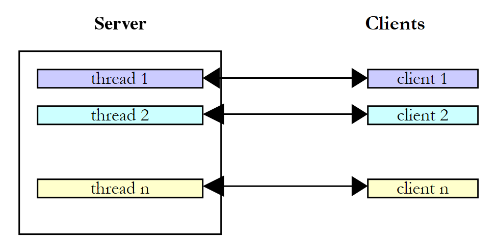

8. Hilos de ejecución
Este capítulo presenta la ejecución simultánea de varias porciones de código dentro de un mismo programa: los hilos (hilos de ejecución) y las herramientas utilizadas para sincronizarlos. Hace unos veinte años, la mayoría de las máquinas tenían un solo procesador, y el paralelismo era en gran parte una ilusión mantenida por el sistema operativo. Hoy, hasta la computadora portátil más básica tiene varios núcleos: varios hilos se ejecutan realmente al mismo tiempo, lo que hace aún más frecuentes los problemas de sincronización que se analizan aquí.
Kotlin no tiene hilos propios en la JVM: utiliza los hilos de Java, que se integraron en Java desde su primera versión (1996) mediante la clase [Thread], la palabra clave [synchronized], y los métodos [wait] y [notify] de la clase [Object]. Java 5 (2004) agregó el paquete [java.util.concurrent] y sus subpaquetes [java.util.concurrent.locks] y [java.util.concurrent.atomic]: bloqueos, semáforos, colecciones concurrentes, grupos de hilos, etc. Java 7 agregó el framework [Fork/Join], Java 8 introdujo los streams paralelos y Java 21 introdujo los hilos virtuales, todo lo cual cambió profundamente la manera de escribir servidores. Por último, Java 25 introduce los valores acotados a un ámbito ([ScopedValue]). Todas estas clases del framework del JDK son directamente utilizables en Kotlin: es una de sus grandes fortalezas. La biblioteca estándar de Kotlin añade algunas funciones que facilitan su uso: la función [thread] y la función de extensión [withLock] del paquete [kotlin.concurrent], la función [synchronized] y las anotaciones [@Volatile] y [@Synchronized] … Veremos todas estas herramientas en este capítulo.
Sin embargo, los hilos no son la última palabra de Kotlin en programación concurrente: su solución nativa para la asincronía son las corrutinas, que se presentan en el capítulo 9. Se basan en hilos, y todo lo que veremos aquí (secciones críticas, visibilidad de las escrituras, interbloqueos, etc.) sigue siendo esencial para comprenderlas a fondo.
Los ejemplos están en el proyecto Gradle [08-threads]. Cada programa es un archivo ubicado en un paquete que lleva su nombre ([threads01/Threads01.kt] en el paquete [threads01]…) y se ejecuta con [gradlew -q run -Pmain=threads01.Threads01Kt], o mediante el triángulo verde de IntelliJ IDEA. Los argumentos del programa, si los hay, se pasan a Gradle con la opción [--args]: [gradlew -q run -Pmain=threads08.Threads08Kt --args="5"].
Una advertencia antes de empezar: los resultados de un programa multihilo varían de una ejecución a otra. El orden en que los hilos obtienen acceso al procesador depende del sistema operativo, del número de procesadores y de la carga de la máquina. Los resultados reproducidos en este capítulo se obtuvieron en una máquina Linux de dos procesadores compartida con otros programas muy activos. Si ejecuta los ejemplos, obtendrá resultados similares, pero rara vez idénticos. En cada caso indicaremos qué es reproducible y qué no.
8.1. La clase Thread
Cuando se inicia una aplicación, esta se ejecuta en un flujo de ejecución llamado hilo. La clase que modela un hilo es la clase [java.lang.Thread] del paquete del JDK. Recuerde que Kotlin representa los descriptores de acceso de Java [getXxx()] / [setXxx(…)] (y [isXxx()] para un booleano) como propiedades: escribimos [thread.name = "Main"] en lugar de [thread.setName("Main")]. Los principales constructores, propiedades y métodos de la clase son los siguientes:
Miembro | Función |
[Thread(task: Runnable)], [Thread(task: Runnable, name: String)] | crea un hilo que ejecutará el método [run] de [task]. [Runnable] es la interfaz de Java [void run()]: mediante la conversión SAM (capítulo 7), se le pasa una lambda [{ … }] o una referencia a función [::f] |
[thread(start, isDaemon, name, …) { … }] | (biblioteca de Kotlin, paquete [kotlin.concurrent]) crea un hilo que ejecuta la lambda, lo configura con argumentos con nombre y, de forma predeterminada, lo ejecuta de inmediato |
[Thread.ofPlatform()], [Thread.ofVirtual()] | (Java 21) proporcionan un “constructor” (builder) de hilos de plataforma o de hilos virtuales, que se puede configurar (nombre, daemon, etc.) antes de crear el hilo |
[Thread.currentThread()] | el hilo que ejecuta el código que llamó a este método |
[name] | el nombre del hilo (una propiedad modificable), útil para el seguimiento |
[threadId()] | (Java 19) un identificador numérico único del hilo, de tipo [Long]; reemplaza a [getId()], que está obsoleto |
[isDaemon] | indica (de forma fija) si el hilo es un hilo daemon (véase más adelante) |
[priority] | la prioridad del hilo, que va de 1 ([MIN_PRIORITY]) a 10 ([MAX_PRIORITY]), con 5 ([NORM_PRIORITY]) como valor predeterminado |
[state], [isAlive] | estado del hilo ([NEW], [RUNNABLE], [BLOCKED], [WAITING], [TIMED_WAITING], [TERMINATED]); [isAlive] indica si se ha iniciado y aún no ha terminado (solo lectura) |
[isVirtual] | (Java 21) indica si el hilo es un hilo virtual (solo lectura) |
[start()] | Inicia el hilo |
[join()], [join(duration: Duration): Boolean] | El hilo T1, que ejecuta [T2.join()], queda bloqueado hasta que el hilo T2 haya terminado. La segunda forma (Java 19) limita el tiempo de espera e indica si T2 ha terminado |
[Thread.sleep(ms: Long)], [Thread.sleep(d: Duration)] | el hilo que ejecuta el método se suspende durante [ms] milisegundos (durante la duración [d]). Pierde la CPU, que se cede a otro hilo |
[interrupt()], [isInterrupted] | solicita al hilo que se suspenda; comprueba si se ha solicitado una suspensión (véase más adelante) |
Los métodos [join] y [sleep] lanzan la excepción [InterruptedException] si el hilo es interrumpido mientras espera. En Java, esta es una excepción comprobada, que el compilador exige manejar o declarar en una cláusula [throws]. Kotlin no tiene excepciones comprobadas (capítulo 3): el compilador no impone nada. Esto no significa que se pueda ignorar lo que esta excepción significa: lo trataremos en la sección sobre la interrupción de hilos.
La clase [Thread] también tiene un método, [stop], que terminaba un hilo por la fuerza. Está obsoleto desde Java 1.2 y, desde Java 20, simplemente lanza la excepción [UnsupportedOperationException]: detener un hilo abruptamente podía dejar los datos que estaba manejando en un estado inconsistente. Hoy, se le pide a un hilo que se detenga de forma cooperativa mediante interrupción: lo veremos un poco más adelante.
Esta es una primera aplicación que demuestra la existencia de un hilo de ejecución principal, el que ejecuta la función [main]. El programa [Threads01.kt] es el siguiente:
Resultados:
Comentarios:
- línea 9: se obtiene una referencia al hilo que ejecuta el programa;
- Líneas 11–14: mostramos su nombre, lo modificamos (una simple asignación a la propiedad [name], que llama al método de Java [setName]) y lo mostramos de nuevo. Inicialmente, el hilo principal se llama [main] (línea 1 de los resultados): el lanzador de Java le asignó este nombre;
- Líneas 15–22: algunas propiedades del hilo. En esta ejecución, el hilo principal tiene el ID 3: la máquina virtual crea algunos hilos para sus propios fines antes de ejecutar [main], y este ID puede variar de una versión de Java a otra. No es un hilo daemon ([isDaemon] es igual a [false]) ni un hilo virtual (hablaremos de estos dos conceptos más adelante); su prioridad es la prioridad normal de 5; se está ejecutando ([RUNNABLE]). El método [toString] del hilo, llamado por la plantilla ["$main"] (línea 21), muestra su ID, su nombre, su prioridad y el nombre de su grupo de hilos ([main]);
- línea 22: la máquina en la que se ejecutó el ejemplo tiene 2 procesadores;
- líneas 26–29: un bucle que imprime un mensaje cada segundo. [Thread.sleep(1000)] suspende el hilo principal durante un segundo. En Java, la función [main] tenía que declarar la excepción comprobada [InterruptedException] en una cláusula [throws]; en Kotlin, no existe tal requisito. Observe el formato [HH:mm:ss] (horas de 0 a 23): el formato [hh] mostraría las horas de 1 a 12.
8.2. Creación de hilos de ejecución
Es posible tener aplicaciones en las que porciones de código se ejecutan “simultáneamente” en distintos hilos de ejecución. Si la máquina tiene menos procesadores que hilos listos para ejecutarse, los hilos se reparten los procesadores: cada uno accede a ellos por turnos durante un breve instante (unos milisegundos). En una máquina multiprocesador, varios hilos se ejecutan realmente al mismo tiempo. El tiempo asignado a un hilo depende de varios factores, entre ellos su prioridad, que tiene un valor predeterminado pero puede establecerse mediante programación (propiedad [priority]); esto es solo una indicación, que el sistema operativo es libre de ignorar (Linux la ignora de forma predeterminada). Un hilo que tiene acceso al procesador puede liberarlo antes de tiempo:
- esperando un evento (la finalización de otro hilo con [join], la espera de una señal);
- entrando en estado de suspensión durante un tiempo determinado ([sleep]).
Primero se crea un hilo T, por ejemplo mediante el constructor [Thread(task, name)], donde [task] es un objeto que implementa la interfaz de Java [Runnable], cuyo único método es [void run()]. Mediante la conversión SAM descrita en el capítulo 7, se pasa una lambda o una referencia a función de tipo [() -> Unit] en lugar de un [Runnable]. En código antiguo, también se encuentran clases derivadas de [Thread] que redefinen su método [run]: esto no se recomienda, ya que mezcla la tarea que se debe realizar con el medio de ejecutarla.
Crear un hilo no lo inicia:
- la ejecución del hilo T se inicia con [T.start()]: el método [run] de la tarea pasada al constructor de T será entonces ejecutado por el hilo T. El código que ejecuta la instrucción [T.start()] no espera a que el hilo T termine: pasa de inmediato a la siguiente instrucción. Ahora tenemos dos hilos ejecutándose en paralelo. A menudo necesitan comunicarse entre sí para seguir el avance del trabajo compartido: este es el problema de la sincronización de hilos;
- Una vez iniciado, el hilo T se ejecuta de forma autónoma. Se detiene cuando termina la función que está ejecutando;
- podemos esperar a que termine de ejecutarse mediante [T.join()]. Es una instrucción bloqueante: el hilo que la ejecuta queda bloqueado hasta que el hilo T haya terminado su trabajo. Este es un método básico de sincronización.
El programa [Threads02.kt] es el siguiente:
Comentarios:
- línea 9: se le da un nombre al hilo principal;
- líneas 12–14: se crean 5 hilos. La función [Array(5) { i -> … }] crea un arreglo de 5 elementos, donde el elemento i es el valor devuelto por la lambda. Las referencias a los hilos se almacenan así en un arreglo para poder recuperarlas más tarde. Cada hilo ejecuta la función [display] de las líneas 26–33;
- Línea 14: la referencia a función [::display], de tipo [() -> Unit], se convierte automáticamente en un objeto [Runnable]: la función [display] no tiene parámetros y no devuelve ningún resultado, igual que [run]. En Java, en un archivo fuente compacto, habría que escribir [this::display]; en Kotlin, [display] es una función de nivel superior, a la que simplemente se hace referencia como [::display]. El segundo parámetro del constructor es el nombre del hilo;
- líneas 17–18: se lanzan los hilos. Esta operación no es bloqueante: el hilo n.º i se ejecuta en paralelo con el hilo principal que lo lanzó;
- línea 22: el hilo principal llega al final del programa;
- líneas 26–33: la función [display] muestra el nombre y el ID del hilo que la ejecuta, así como las horas de inicio y de fin (al milisegundo) de la ejecución;
- línea 32: todo hilo que ejecuta la función [display] hace una pausa de 1 segundo. El procesador se cede entonces a otro hilo que espera el procesador. Al final de la pausa de 1 segundo, el hilo en pausa vuelve a ser apto para recibir el procesador. Lo obtendrá cuando le llegue el turno;
- Líneas 37–42: la función [sleep] envuelve a [Thread.sleep]. El compilador de Kotlin no exige capturar la excepción [InterruptedException] que [sleep] puede lanzar. Sin embargo, si se dejara escapar de la función ejecutada por un hilo, terminaría ese hilo con un mensaje de error en la consola. Por lo tanto, la función [sleep] la captura y restablece el indicador de interrupción del hilo (línea 42); explicaremos esta acción en la sección sobre las interrupciones. El nombre [_] dado al parámetro de la cláusula [catch] indica que este parámetro no se utiliza. Encontraremos esta pequeña función en la mayoría de los programas de este capítulo;
- línea 47: la función [time], escrita como una expresión ([= …]), devuelve la hora actual con el formato [HH:mm:ss.SSS] ([SSS]: milisegundos).
Resultados:
Estos resultados son muy informativos:
- En primer lugar, vemos que lanzar un hilo no es bloqueante. El hilo principal lanzó 5 hilos y llegó al final del programa (línea 5) aunque el hilo 2 todavía no había mostrado su primer mensaje;
- el orden de ejecución de los hilos es impredecible: en esta ejecución, los hilos 3 y 4 mostraron sus mensajes de inicio antes que el hilo 0. El sistema operativo tiene aquí 6 hilos y 2 procesadores; asigna los procesadores a estos hilos según sus propias reglas;
- También observamos que el orden de las salidas no siempre sigue el orden de las horas mostradas: el hilo principal mostró su fin a las 14.490, después de mensajes fechados a las 14.491 y 14.492. La hora se calcula antes de la salida, y entretanto otro hilo puede haber escrito en la consola. [println] (que llama a [System.out.println]) es seguro para hilos: dos líneas escritas por dos hilos no se mezclan, pero su orden no está garantizado;
- los ID de los hilos creados (del 21 al 25) muestran que la máquina virtual ya había creado unos veinte hilos para sus propios fines (recolección de basura, compilador justo a tiempo, etc.);
- Cada hilo hace una pausa de un segundo con [sleep] y luego termina de ejecutar la función [display];
- Por último, el programa no se detuvo cuando el hilo principal terminó su trabajo: la máquina virtual esperó a que terminaran los cinco hilos. Esto se debe a que estos hilos no son hilos daemon: la máquina virtual de Java se detiene cuando todos sus hilos no daemon han terminado.
A la inversa, un hilo puede declararse como hilo daemon estableciendo su propiedad [isDaemon] en [true] antes de lanzarlo. Los hilos daemon son hilos de servicio que no impiden que la máquina virtual se detenga: cuando termina el último hilo no daemon, se detienen. El programa [Threads03.kt] los crea mediante la función [thread] de la biblioteca de Kotlin:
Comentarios:
- línea 6: la función [thread] pertenece al paquete [kotlin.concurrent] de la biblioteca estándar; debe importarse;
- Líneas 13–16: la función [thread(…) { … }] crea un hilo que ejecutará la expresión lambda que sigue a los paréntesis (la sintaxis de la “lambda final”, capítulo 7). Todos sus demás parámetros tienen valores predeterminados; los que necesitamos se establecen mediante argumentos con nombre: aquí, [isDaemon = true] y [name = "$i"]. Su firma es la siguiente: [fun thread(start: Boolean = true, isDaemon: Boolean = false, contextClassLoader: ClassLoader? = null, name: String? = null, priority: Int = -1, block: () -> Unit): Thread]. De forma predeterminada ([start = true]), el hilo se lanza de inmediato; la función devuelve el hilo creado. Es un reemplazo útil de la secuencia de Java [var t = new Thread(…); t.setDaemon(true); t.start();]. El rango [0..<5] (enteros del 0 al 4) es lo mismo que [0 until 5];
- Línea 21: el hilo principal espera 100 ms para dar tiempo a que los hilos se inicien y luego termina.
Resultados:
Los 5 hilos comenzaron su ejecución y luego el hilo principal terminó (línea 6). Observe que su mensaje, fechado a las 15.819, se muestra después de mensajes fechados de 15.827 a 15.833: había calculado la hora antes de que los demás hilos escribieran algo. Los hilos daemon se detuvieron entonces durante su período de suspensión de un segundo: no se muestra ningún mensaje de fin. En una máquina muy cargada, algunos hilos ni siquiera tienen tiempo de mostrar sus mensajes de inicio, ya que 100 ms no bastan para que obtengan el procesador: otra ejecución puede por lo tanto producir un número diferente de mensajes de inicio, pero nunca mensajes de fin. Se logra el mismo efecto terminando [main] con [exitProcess(0)] (paquete [kotlin.system], que llama a [System.exit(0)]), que apaga la máquina virtual y, con ella, todos los hilos de la aplicación, sean daemon o no. Los hilos virtuales, de los que hablaremos más adelante, son siempre hilos daemon.
Si el hilo principal quiere esperar a que terminen los hilos que ha creado, utiliza el método [join]. El programa [Threads04.kt] muestra además cómo hacer que un hilo ejecute una función con parámetros:
Comentarios:
- Líneas 13–15: la función [map] convierte el rango [0..<5] en una lista de 5 hilos, que son creados y lanzados por la función [thread]. [tasks] es de tipo [List<Thread>];
- línea 15: el hilo ejecuta la lambda [{ display(i, 1000L + 100 * i) }]. Esta sintaxis permite llamar a una función con parámetros tipados (en este caso, un [Int] y un [Long]), mientras que [run] no tiene ninguno;
- la lambda utiliza directamente el parámetro [i] de la lambda [map]. En Java, habría tenido que usar una copia de la variable del bucle ([int number = i;]), porque una lambda de Java solo puede usar variables que son efectivamente finales, y la variable del bucle [i] de un [for (int i = 0; …; i++)] se modifica. En Kotlin, este problema no se plantea aquí: [i] es un parámetro y, por lo tanto, inmutable, y lo mismo ocurre con la variable del bucle [for (i in 0..<5)], que es una nueva variable [val] en cada iteración. Kotlin también permite que una lambda capture una variable [var] y la modifique (capítulo 7); sin embargo, una variable [var] compartida entre varios hilos plantea problemas de acceso concurrente que examinaremos más adelante. La trampa que hemos evitado es un clásico: un hilo que se inicia tarde no debe leer el valor de [i] de una iteración posterior;
- líneas 19–21: el hilo principal espera a cada uno de los hilos. Primero queda bloqueado esperando al hilo 0, luego al hilo 1, y así sucesivamente. Cuando sale del bucle, los 5 hilos que lanzó han terminado;
- línea 32: la tarea n.º i duerme 1000 + 100 × i milisegundos, de modo que los hilos terminan en un orden conocido.
Resultados:
Los mensajes de inicio aparecen en cualquier orden, pero los mensajes de fin aparecen en orden numérico, ya que las duraciones de las pausas son ascendentes: esta parte del resultado es reproducible. La última línea muestra que el hilo principal terminó después de los hilos que había lanzado, en el momento en que terminó el último de ellos.
8.3. Detener un hilo: la interrupción
¿Cómo se detiene un hilo antes de que termine su trabajo, por ejemplo, cuando el usuario cancela una operación larga? La JVM no permite matar un hilo; proporciona un mecanismo cooperativo llamado interrupción:
- Cada hilo tiene un indicador de interrupción, un booleano que inicialmente vale [false];
- Un hilo llamado T1 que quiere terminar el hilo T2 llama a [T2.interrupt()]. Esto activa el indicador de terminación de T2. Se trata de una solicitud de terminación: T2 no se termina; le corresponde a ese hilo decidir cuándo y cómo terminar por sí mismo, de modo que deje sus datos en un estado consistente;
- si T2 está bloqueado en un método de espera ([sleep], [join], [wait] y la mayoría de los métodos bloqueantes de [java.util.concurrent]), se le despierta: el método lanza la excepción [InterruptedException] y el indicador de interrupción se restablece a [false];
- si T2 realiza cálculos sin esperar nunca, debe verificar su propio indicador con [Thread.currentThread().isInterrupted] a intervalos regulares.
En Java, los métodos bloqueantes declaran la excepción controlada [InterruptedException]: el compilador obliga al programador a decidir qué hacer ante una solicitud de detención. Kotlin no lo exige, pero la decisión sigue siendo necesaria y es la misma. Hay dos respuestas correctas: dejar que la excepción se propague al llamador, o interceptarla y finalizar la tarea de forma ordenada. Cuando ninguna de las dos opciones es posible, como en la función [sleep] del programa [Threads02.kt], el indicador se restablece mediante [Thread.currentThread().interrupt()] para que el código llamador pueda ver la solicitud. La única respuesta incorrecta es ignorar la excepción. El programa [Threads05.kt] muestra los tres casos:
Comentarios:
- líneas 10–21: el hilo [sleeper] se crea y se lanza mediante un constructor de hilos de plataforma, [Thread.ofPlatform().name("sleeper")], cuyo método [start] recibe la lambda que se va a ejecutar (presentaremos estos constructores con el programa [Threads06.kt]). Pasa la mayor parte del tiempo en [Thread.sleep]. El bucle [while (true)] no tiene condición de terminación: es la excepción [InterruptedException], lanzada por [sleep] cuando el hilo es interrumpido, la que provoca la salida del bucle (línea 19). La lambda es una instrucción [try] que abarca todo el trabajo del hilo: al recibir la excepción, el hilo muestra un mensaje y luego termina;
- líneas 25–31: el hilo [calculator] nunca espera. Verifica su indicador de interrupción en cada iteración del bucle (línea 28). Kotlin trata el método Java [isInterrupted()] como una propiedad Boolean [isInterrupted]. El número de iteraciones se muestra mediante la función de cadenas de Kotlin [format], que utiliza los formatos de [String.format]: [%,d] muestra un entero con el separador de miles del idioma actual;
- líneas 34–40: el hilo [deaf] intercepta [InterruptedException] y continúa como si nada hubiera pasado. La solicitud de detención se pierde: este es el error que se debe evitar. Es un hilo daemon ([daemon()]), de modo que el programa puede terminar sin esperarlo;
- línea 46: el hilo principal deja que los otros hilos se ejecuten durante un segundo;
- líneas 48–50: solicita que los tres hilos se detengan;
- líneas 52–54: espera a que cada hilo termine durante un segundo como máximo. El método [join(Duration)] (Java 19) devuelve [true] si el hilo ha terminado dentro de ese plazo, y [false] en caso contrario. [Duration.ofSeconds(1)] representa una duración de un segundo (clase [java.time.Duration]).
Resultados:
Los hilos [sleeper] y [calculator] terminaron pocos milisegundos después de la solicitud; el hilo [deaf] la ignoró y seguía sin terminar un segundo después ([false], última línea). El número de iteraciones del calculador varía mucho de una ejecución a otra, según la parte de tiempo de CPU que se le haya asignado; el resto del resultado es reproducible, salvo por un orden de magnitud, en las líneas 4 a 6.
Una interrupción es el mecanismo que rige toda la biblioteca de Java: veremos más adelante que el método [cancel] de una tarea ([Future]) y el cierre abrupto de un grupo de hilos ([shutdownNow]) interrumpen los hilos afectados. Las corrutinas tratadas en el capítulo 9 tienen su propio mecanismo, la cancelación, que también es cooperativa, así como otras formas de detener un proceso, como los tiempos de espera.
8.4. Hilos virtuales
Los hilos que hemos creado hasta ahora son hilos de plataforma: cada uno es un envoltorio de un hilo del sistema operativo, que ocupa durante toda su vida útil. Un hilo del sistema operativo es un recurso costoso: crearlo toma tiempo, su pila reserva memoria (del orden de un megabyte) y el sistema no puede administrar eficientemente más de unos pocos miles. Sin embargo, un servidor que dedica un hilo a cada cliente (véase el diagrama del párrafo siguiente) pasa la mayor parte del tiempo esperando: la respuesta de una base de datos, la siguiente solicitud del cliente… Durante estas esperas, el hilo del sistema está bloqueado y no se puede utilizar.
Java 21 introdujo los hilos virtuales (JEP 444), que se pueden usar tal cual en Kotlin. Un hilo virtual es un objeto [Thread]como cualquier otro, pero es administrado por la máquina virtual de Java y no por el sistema operativo:
- para ejecutarse, un hilo virtual se monta en un hilo de plataforma, llamado su «hilo portador». Los hilos portadores forman un grupo pequeño, cuyo tamaño predeterminado es el número de procesadores;
- cuando un hilo virtual se bloquea ([sleep], espera de E/S de red, un bloqueo, una cola bloqueante, etc.), se desmonta: su pila se guarda aparte en la memoria de la máquina virtual y el hilo portador queda inmediatamente disponible para otro hilo virtual. Cuando termina la espera, el hilo virtual se vuelve a acoplar a un hilo portador, no necesariamente el mismo;
- un hilo virtual ocupa unos cientos de bytes: se pueden crear millones.
Las corrutinas de Kotlin (capítulo 9) se basan en una idea similar —suspender un proceso que espera sin bloquear un hilo del sistema—, pero la implementa el compilador de Kotlin y no la máquina virtual. Compararemos ambos enfoques en el capítulo 9.
El programa [Threads06.kt] compara el lanzamiento de 10 000 hilos de plataforma y de 10 000 hilos virtuales, cada uno de los cuales duerme durante un segundo:
Comentarios:
- líneas 7–8: la función [measure] se llama dos veces: primero con un constructor de hilos de plataforma ([Thread.ofPlatform()]) y luego con un constructor de hilos virtuales ([Thread.ofVirtual()]). Ambos constructores comparten el tipo común [Thread.Builder]; el resto del código es idéntico. Un constructor se configura mediante llamadas encadenadas: [name("virtual")] establece el nombre del hilo; [name("", 0)] solicitaría hilos con nombres formados por un prefijo seguido de un número que empieza en 0; [daemon()] (solo para hilos de plataforma) solicita hilos daemon. Su método [start(Runnable)] crea un hilo y lo inicia de inmediato; su método [unstarted(Runnable)] lo crea sin iniciarlo;
- líneas 21–26: la función [measure] lanza [nbThreads] hilos que duermen durante un segundo, espera a que terminen y muestra la duración total. La función [List(n) { … }] construye la lista de hilos creados y lanzados por [builder.start { … }] (una lambda convertida en [Runnable]). El método [System.nanoTime()] devuelve un tiempo en nanosegundos, que se utiliza únicamente para medir duraciones;
- líneas 11–14: un hilo virtual llamado [virtual] muestra su representación textual antes y después de dormir;
- línea 17: un hilo virtual es siempre un hilo daemon.
Resultados:
- 10 000 hilos de plataforma tardaron varios segundos en hacer lo que debería haber tomado un segundo: crear los hilos del sistema y administrar sus pilas tuvo un costo elevado. Con 100 000 hilos, el programa probablemente fallaría por falta de memoria o de hilos del sistema disponibles;
- 10 000 hilos virtuales completaron la misma tarea en poco más de un segundo: mientras dormían, no ocuparon ningún hilo del sistema. Los tiempos exactos varían de una ejecución a otra, pero la diferencia entre los dos tipos de hilos es reproducible;
- la representación textual de un hilo virtual ([VirtualThread[#…,virtual]]) indica, después del carácter [@], el hilo portador en el que está montado: un hilo del grupo [ForkJoinPool-1], al que volveremos más adelante. En esta ejecución, el hilo virtual se durmió en el portador [worker-2] y reanudó su ejecución en el portador [worker-1]: efectivamente fue desmontado y luego montado de nuevo en otro portador (esto depende de la ejecución).
Los hilos virtuales no hacen que los cálculos sean más rápidos: un cálculo que mantiene ocupado al procesador sin esperar nunca no se ejecuta más rápido en un hilo virtual que en un hilo de plataforma, y el número de cálculos simultáneos sigue limitado por el número de procesadores. Su ventaja radica en poder dedicar, sin preocuparse por el costo, un hilo a cada tarea que pasa la mayor parte del tiempo esperando: es el caso de los servidores, del párrafo siguiente y de los capítulos 12 y 13. Todo lo que veremos sobre la sincronización de hilos se aplica por igual a los hilos virtuales y a los hilos de plataforma.
8.5. La utilidad de los hilos
Ahora que hemos destacado la existencia de un hilo predeterminado —el que ejecuta la función [main]— y que sabemos cómo crear hilos adicionales, veamos con más detalle los beneficios de los hilos. Tienen dos usos principales:
- aprovechar todos los procesadores de la máquina para un cálculo que requiere mucho tiempo: el trabajo se divide en partes asignadas a distintos hilos. Lo haremos con flujos paralelos y con el marco [Fork/Join] al final de este capítulo;
- realizar varias tareas simultáneamente, en particular cuando algunas de ellas consisten principalmente en esperar (una respuesta de red, una lectura de disco o una entrada del usuario). Es el caso de las aplicaciones cliente/servidor de Internet, que trataremos en el capítulo 12.
En una aplicación cliente/servidor de Internet, un servidor ubicado en una máquina S1 responde a las solicitudes de clientes ubicados en máquinas remotas C1, C2, …, Cn:

Usamos todos los días aplicaciones de Internet que siguen este esquema: servicios web, correo electrónico, transferencias de archivos, etc. En el diagrama anterior, el servidor S1 debe atender a los clientes Ci simultáneamente. Si tomamos el ejemplo de un servidor de archivos, sabemos que una transferencia puede tardar a veces varios minutos. Es impensable que un solo cliente monopolice el servidor durante un período tan largo. Una solución habitual es que el servidor cree tantos hilos de ejecución como clientes haya. Cada hilo se encarga entonces de atender a un cliente específico:

Con hilos de plataforma, el servidor utiliza en la práctica un grupo de hilos—que veremos más adelante— cuyo número limitado de hilos fija un tope al número de clientes atendidos simultáneamente. Con hilos virtuales, el esquema anterior vuelve a ser la solución óptima: un hilo virtual por cliente, incluso si hay decenas de miles de clientes, ya que un cliente en espera no ocupa ningún hilo del sistema. Esto es lo que ahora admiten los servidores web de la JVM, como Tomcat —que usaremos en el capítulo 13—. En Kotlin, las corrutinas tratadas en el capítulo 9 ofrecen otra solución a este mismo problema: una corrutina por cliente.
8.6. Intercambio de información entre hilos
En los ejemplos anteriores, los hilos ejecutaban una función sin parámetros, o una lambda que llamaba a una función con parámetros. Como el método [run] de [Runnable] no tiene parámetros ni valor de retorno, la lambda transmite información al hilo lanzado: captura las variables que necesita. Si la variable capturada hace referencia a un objeto, el hilo lanzado también puede almacenar en él resultados que el hilo lanzador leerá. El programa [Threads07.kt] es el siguiente:
Comentarios:
- líneas 10–16: la información intercambiada con cada hilo es un objeto [Data]. Hay un intercambio bidireccional de información entre el hilo lanzador y el hilo lanzado. [start] y [duration] son propiedades [val] declaradas en el constructor primario: se establecen una vez por todas al construir el objeto:
- [start]: la hora de inicio de la ejecución del hilo, establecida por el hilo lanzador;
- [duration]: duración en segundos del sueño del hilo lanzado, establecida por el hilo lanzador;
- [end]: la hora de fin de la ejecución del hilo, establecida por el hilo lanzado. Es una propiedad [lateinit var] (capítulo 4): no tiene valor cuando se construye el objeto, pero su tipo no es [LocalTime?]. Leerla antes de que se le haya asignado un valor lanzaría la excepción [UninitializedPropertyAccessException]. La clase Java correspondiente tenía casi treinta líneas, incluidos sus métodos de acceso;
- líneas 28–29: se crea un objeto [Data] y se agrega a la lista [data];
- línea 31: la lambda [{ sleep(d) }] captura la variable [d]: el hilo lanzado ejecutará la función [sleep] de las líneas 49–57 con el objeto [d] como parámetro. El operador [+=] agrega el hilo devuelto por la función [thread] a la lista modificable [tasks];
- líneas 36–42: el hilo principal espera a que termine cada uno de los hilos que ha lanzado, luego recupera el objeto [Data] del hilo y muestra su contenido. La función [zip] combina las dos listas en una lista de pares ([Pair<Thread, Data>]), que el bucle [for] desestructura en [(task, d)]. La duración real se calcula mediante [Duration.between(d.start, d.end)];
- línea 52: la propiedad [duration] del parámetro establece la duración del sueño;
- línea 57: se completa la propiedad [end] del parámetro.
Resultados:
Este ejemplo muestra que dos hilos pueden intercambiar información:
- El hilo llamador puede controlar la ejecución del hilo llamado proporcionándole información;
- El hilo lanzado puede devolver resultados al hilo lanzador.
Para que el hilo lanzador sepa cuándo están disponibles los resultados que espera, debe recibir una notificación cuando el hilo lanzado haya terminado. Aquí, esperó a que el hilo terminara mediante el método [join]. Esto no es solo una cuestión de sincronización temporal: veremos en la sección sobre la anotación [@Volatile] que una operación de escritura realizada por un hilo no es necesariamente visible para otro. El modelo de memoria de Java, que se aplica a todo programa ejecutado por la JVM —y, por lo tanto, a los programas Kotlin—, garantiza que todo lo escrito por un hilo es visible para el hilo que esperó su finalización mediante [join], y que todo lo escrito por el hilo llamador antes de [start] es visible para el hilo llamado. Exploraremos otras formas de sincronizar más adelante.
En lugar de una lambda, podríamos escribir una clase que implemente [Runnable] y cuyas propiedades contengan la información intercambiada. La lambda es más concisa; hoy es la forma más habitual de escribirlo. Para recuperar el resultado de un procesamiento, veremos también más adelante la interfaz [Callable<V>], cuyo método [call()] devuelve un resultado, y, en el capítulo 9, la función [async] de las corrutinas, que devuelve un resultado diferido ([Deferred]).
8.7. Acceso concurrente a recursos compartidos
8.7.1. Acceso concurrente sin sincronización
En el párrafo anterior, la información se intercambiaba solo entre dos hilos y en momentos muy específicos: era un ejemplo clásico de paso de parámetros. Hay otros casos en los que varios hilos comparten información y pueden querer leerla o actualizarla al mismo tiempo. Esto plantea el problema de la integridad de dicha información. Supongamos que la información compartida es una estructura S que contiene diversos datos I1, I2, …, In:
- un hilo T1 comienza a actualizar la estructura S: modifica el campo I1 y es interrumpido antes de completar la actualización de toda la estructura S;
- un hilo T2 que obtiene el procesador lee entonces la estructura S para tomar decisiones. Lee una estructura en un estado inestable: algunos campos están actualizados y otros no.
Esta situación se denomina acceso concurrente a un recurso compartido, en este caso la estructura S. A menudo es difícil de manejar. Consideremos el siguiente ejemplo para ilustrar los problemas que pueden surgir:
- una aplicación generará n hilos, donde n se pasa como parámetro;
- el recurso compartido es un contador que cada hilo generado debe incrementar;
- al final de la aplicación, se muestra el valor del contador. Por lo tanto, debería ser igual a n.
El programa [Threads08.kt] es el siguiente:
Comentarios:
- líneas 9–24: el recurso compartido es la propiedad [value] del objeto singleton [Counter] (declaración [object], capítulo 4). El contador está encapsulado dentro de este objeto, con la función [increment] ejecutada por cada hilo. La palabra clave [private set] (línea 12) hace que la propiedad sea legible desde cualquier lugar pero modificable solo dentro del objeto: esto equivale al campo privado y a su método de acceso [getValue] en la versión de Java;
- línea 18: se lee el contador;
- línea 21: el hilo se detiene durante 1 segundo. Por lo tanto, pierde la CPU;
- línea 23: se incrementa el contador;
- líneas 30–34: el número de hilos se pasa como argumento. La expresión [args.singleOrNull()?.toIntOrNull() ?: -1] devuelve el entero contenido en el único argumento del programa, o -1 si no hay exactamente un argumento ([singleOrNull] devuelve entonces [null]) o si ese argumento no es un entero ([toIntOrNull] devuelve entonces [null]). La condición [nbThreads !in 1..nbMaxThreads] rechaza, por lo tanto, tanto un argumento ausente o inválido como un número fuera del intervalo [1, 100]. En Java era necesario escribir un método que interceptara [NumberFormatException]. En caso de error, el programa escribe un mensaje en la salida de errores ([System.err]) y termina con el código de salida 1 ([exitProcess(1)], del paquete [kotlin.system]);
- línea 38: cada hilo ejecuta la función [increment] del objeto [Counter], a la que se hace referencia mediante la referencia vinculada [Counter::increment];
- líneas 39–41: se lanzan los hilos y luego el hilo principal espera a que terminen.
La pausa de un segundo se incluye únicamente para obligar al hilo a ceder la CPU entre la lectura y la escritura del contador. En la práctica, no hay garantía de que un hilo no sea interrumpido entre esos dos momentos y, en una máquina multiprocesador, dos hilos incluso pueden leer el contador exactamente al mismo tiempo. La pausa de un segundo simplemente formaliza este riesgo.
Con Gradle, los argumentos del programa se pasan mediante la opción [--args]. Sin ningún argumento, se muestra un mensaje de error (el comando [echo $?] del shell de Linux muestra el código de salida del último programa ejecutado; en Windows, es [echo %errorlevel%]). Para asegurarnos de que se muestre el código de salida del programa —y no el de Gradle (que además informa del fallo de la tarea [run])—, aquí ejecutamos directamente la clase compilada con el comando [java]:
Con 5 hilos:
Al observar estos resultados, se ve claramente lo que ocurre:
- Un primer hilo lee el contador. Encuentra 0. Se detiene durante 1 s y pierde así la CPU;
- un segundo hilo también lee el valor del contador. Sigue siendo 0, ya que el hilo anterior aún no lo ha incrementado. También se detiene durante 1 segundo;
- en menos de un segundo, los 5 hilos tienen tiempo de leer el valor 0;
- al despertar, incrementan el valor 0 que leyeron y todos escriben el valor 1 en el contador, como lo confirma la última línea (línea 11). Este resultado incorrecto es reproducible: solo cambia el orden de los hilos de una ejecución a otra.
Se podría objetar que el ejemplo es artificial. Entonces eliminemos la pausa y usemos el operador [++], que da la ilusión de una sola instrucción. El programa [Threads09.kt] es el siguiente:
Comentarios:
- líneas 11–12: el número de hilos (4 de forma predeterminada) y el número de incrementos que realiza cada hilo (50 millones de forma predeterminada) se pueden pasar como argumentos. [args.getOrNull(0)] devuelve el primer argumento, o [null] si no existe: el operador Elvis [?:] proporciona entonces el valor predeterminado. El separador [_] hace legible la constante [50_000_000];
- línea 19: los hilos se crean y se lanzan mediante [Thread.ofPlatform().start { … }]; no necesitan nombres. La función [List(nbThreads) { … }] reúne los hilos creados en una lista;
- línea 22: cada hilo incrementa el contador compartido sin hacer pausas;
- líneas 30–31: en la cadena de formato, [%,d] muestra un entero con el separador de miles del idioma actual (en este caso, inglés: una coma).
Resultados:
Se perdieron decenas de millones de actualizaciones durante la primera prueba. La operación de alto nivel [Counter.value++] se traduce en realidad a varias instrucciones básicas del procesador: leer el valor de la memoria, incrementarlo en un registro y escribir el resultado en la memoria. Si dos hilos leen el mismo valor antes de que uno de ellos haya escrito el suyo, se pierde un incremento, exactamente como en el ejemplo anterior.
Las pruebas 2 y 3 merecen una explicación: produjeron el valor exacto. La explicación más probable es la siguiente: tras cierto tiempo de ejecución, el compilador dinámico (JIT) de la máquina virtual optimizó el bucle [repeat(nbIncrements) { … }] (una función [inline], que el compilador de Kotlin reemplazó por un simple bucle): determinó que ningún otro hilo debía acceder al contador durante el bucle (nada en el código lo exige) y colocó el contador en un registro del procesador. Cada hilo lee entonces el contador una sola vez, le suma 50 millones en su registro y lo escribe de vuelta una sola vez al final. Si el trabajo de los hilos no se superpone —como ocurrió aquí—, el resultado es correcto; si, en cambio, los cuatro hilos leen el valor 0 antes de que alguno de ellos haya escrito, se pierden tres de cada cuatro resultados, es decir, 150 millones de actualizaciones de golpe. En esta ejecución, solo la primera prueba —que se ejecutó en gran parte antes de esta optimización— perdió actualizaciones; en otras ejecuciones, las pruebas 2 y 3 también pueden perder actualizaciones, a veces 150 millones de golpe. Esto es lo que hace tan peligrosos estos errores: un programa puede funcionar durante meses y fallar justo el día en que la máquina tiene más carga o funciona más rápido.
¿De dónde viene el problema? Un hilo leyó un valor desactualizado porque otro hilo fue interrumpido, o trabajaba simultáneamente en otro procesador, antes de haber terminado su tarea de actualizar el contador. Esto nos lleva a los conceptos de recursos críticos y secciones críticas en un programa:
- un recurso crítico es un recurso que solo puede ser retenido por un hilo a la vez. Aquí, el recurso crítico es el contador;
- una sección crítica de un programa es una secuencia de instrucciones del flujo de ejecución de un hilo durante la cual accede a un recurso crítico. Debemos garantizar que, durante esta sección crítica, el hilo sea el único con acceso al recurso.
En el programa [Threads08.kt], la sección crítica es el código que va desde la lectura del contador hasta la escritura de su nuevo valor:
Para ejecutar este código, se debe garantizar que un hilo sea el único en ejecución. Puede ser interrumpido, pero durante esa interrupción ningún otro hilo debe poder ejecutar este mismo código. La JVM ofrece diversas herramientas para asegurar la entrada de un solo hilo a las secciones críticas del código, y Kotlin ofrece algunas funciones para utilizarlas con mayor comodidad. Veremos algunas de ellas ahora.
8.7.2. La función synchronized y la anotación @Synchronized
En Java, el bloque [synchronized] delimita una sección crítica de la siguiente manera: [synchronized (lock) { …critical section… }]. [lock] es un objeto visible para todos los hilos que ejecutan la sección crítica. En la JVM, todo objeto tiene un bloqueo interno, también conocido como monitor. El bloque [synchronized] garantiza que solo un hilo a la vez retiene el monitor del objeto [lock], es decir, que solo un hilo a la vez ejecuta la sección crítica: un hilo que encuentra un monitor retenido por otro hilo se bloquea hasta que el monitor se libere. El monitor se libera al salir del bloque, ya sea que la salida sea normal o se deba a una excepción.
Kotlin no tiene una palabra clave [synchronized]. En su lugar, su biblioteca estándar ofrece una [synchronized] función, cuya firma es [inline fun <R> synchronized(lock: Any, block: () -> R): R]. Gracias a la sintaxis de la lambda final, su llamada [synchronized(lock) { …critical section… }] se escribe exactamente igual que el bloque de Java. Como la función es [inline], el compilador de Kotlin reemplaza la llamada por el cuerpo de la lambda, rodeado de las mismas instrucciones de la JVM que el bloque de Java ([monitorenter] / [monitorexit]): no hay diferencia en la ejecución. La función devuelve el valor de la lambda, lo que permite escribir [val v = synchronized(lock) { counter }].
El ejemplo anterior se reescribe de la siguiente manera en [Threads10.kt]:
Comentarios:
- Línea 13: [lock] es el objeto que permitirá sincronizar todos los hilos. Sirve únicamente para este fin: es un simple objeto de la clase [Any], la raíz de las clases de Kotlin (el equivalente de [Object]). Es una propiedad [val]: la referencia nunca debe cambiar, de lo contrario dos hilos podrían bloquear dos objetos distintos. Es privada: ningún código externo al objeto [Counter] puede adquirir este bloqueo;
- línea 11: el contador es ahora una propiedad privada; solo se puede acceder a él desde el exterior mediante la propiedad [value];
- líneas 16–17: la propiedad [value] no tiene campo: su método de acceso [get] lee el contador bajo la protección del bloqueo y devuelve el valor devuelto por la función [synchronized], que es el valor de la lambda [{ counter }]. Aquí esto no es estrictamente necesario, ya que el hilo principal esperó a que los demás hilos terminaran mediante [join]; pero es una buena práctica: los datos protegidos por un bloqueo deben leerse y escribirse bajo la protección de ese bloqueo;
- líneas 24–32: la sección crítica de la función [increment] queda encerrada por la llamada a la función [synchronized]. El hilo retiene el bloqueo mientras duerme durante un segundo: los demás hilos no pueden entrar;
- líneas 52–55: el hilo principal espera a los hilos en el orden inverso al de su creación. La función [asReversed] devuelve una vista de la lista recorrida en orden inverso, sin copiarla.
Resultados con 3 hilos:
- Los tres hilos solicitan la entrada a la sección crítica casi al mismo tiempo;
- solo uno entra, en este caso el hilo 2 (el orden de entrada no está garantizado: no es necesariamente el primero en llegar el que entra primero). Lee el contador, duerme durante un segundo, escribe el nuevo valor y sale de la sección crítica;
- los otros dos hilos se bloquean hasta que el primero sale de la sección crítica, y luego avanzan uno tras otro. Cada uno lee el valor escrito por el anterior. Obsérvese (líneas 7–8) que el hilo 1 leyó el contador antes de que el hilo 2 indicara que había salido de la sección crítica: el hilo 2 efectivamente liberó el bloqueo, pero no muestra su mensaje hasta después del bloque [synchronized], y el hilo 1 fue más rápido;
- el hilo principal esperaba a que el hilo 2 terminara. Cuando se le notificó que el hilo 2 había terminado, esperó a que terminara el hilo 1 y luego el hilo 0;
- El número de hilos es correcto (última línea). Sea cual sea el orden en que se ejecuten los hilos, este resultado es reproducible.
En Java, la palabra clave [synchronized] también puede usarse para anotar un método completo. Kotlin ofrece la anotación [@Synchronized] (paquete [kotlin.jvm], importado automáticamente) con este fin: [@Synchronized fun m() { … }] genera un método Java [synchronized], que equivale a una llamada [synchronized(this) { … }] que abarca todo el cuerpo de la función. En un [object] como [Counter], el objeto bloqueado es el propio objeto singleton. Lo usaremos en el programa [Threads17.kt]. Esta es la sintaxis más corta. Sin embargo, tiene un inconveniente: el objeto bloqueado es visible desde el exterior, y el código externo puede adquirir el mismo bloqueo y bloquear el nuestro. Por lo tanto, a menudo es preferible bloquear un objeto privado, como en el ejemplo. Por la misma razón, nunca se debe bloquear una cadena (los literales de cadena idénticos son un único objeto compartido en todo el programa). Kotlin va un paso más allá que Java en lo que respecta a los números: bloquear un *[Int]* —que se convertiría en un objeto *[Integer]* compartido— es un error de compilación (***[error: synchronizing on 'Int' is forbidden.]***), mientras que Java solo emite una advertencia para los objetos de clases «basadas en valores».
Un hilo que ya retiene un monitor puede volver a entrar en un bloque [synchronized] sobre el mismo objeto sin bloquearse a sí mismo: se dice que el bloqueo es reentrante. Así, una función [@Synchronized] puede llamar a otra función [@Synchronized] del mismo objeto.
8.7.3. La clase ReentrantLock
El bloqueo [synchronized] es simple pero rígido: un hilo que espera un monitor espera indefinidamente, sin poder renunciar tras cierto tiempo y sin poder ser interrumpido. La clase [java.util.concurrent.locks.ReentrantLock] (Java 5) es un bloqueo explícito —también reentrante— que ofrece estas capacidades. Implementa la interfaz [Lock]. Utilizaremos los siguientes constructores y métodos:
Miembro | Función |
[ReentrantLock()], [ReentrantLock(fair: Boolean)] | crea un bloqueo. Un bloqueo justo ([true]) se concede a los hilos en el orden en que lo solicitaron; un bloqueo no justo (el valor predeterminado) es más rápido, pero un hilo puede adelantarse a otros |
[lock()] | El hilo T1, que ejecuta [V.lock()], solicita el bloqueo V. Si V no está retenido por ningún hilo, se concede a T1. Si un hilo T2 realiza entonces la misma operación, se bloquea: un bloqueo solo puede pertenecer a un hilo. T2 se desbloqueará cuando T1 libere V. Así, varios hilos pueden estar bloqueados esperando V |
[tryLock(): Boolean], [tryLock(time: Long, unit: TimeUnit): Boolean] | solicita el bloqueo de inmediato, o esperando como máximo [time]. El método devuelve [false] si no se pudo adquirir el bloqueo |
[lockInterruptibly()] | como [lock], pero la espera puede ser interrumpida ([InterruptedException]) |
[unlock()] | El hilo que retiene V lo libera. Uno de los hilos que esperan V lo adquiere entonces |
[isHeldByCurrentThread] | indica si el hilo actual retiene el bloqueo |
[newCondition(): Condition] | Crea una condición asociada al bloqueo (véase más adelante) |
[withLock { … }] | (biblioteca de Kotlin, paquete [kotlin.concurrent]) función de extensión de la interfaz [Lock]: ejecuta la lambda mientras retiene el bloqueo y lo libera al final, ocurra o no una excepción |
En Java, la sincronización de una sección crítica sigue siempre el mismo patrón: [V.lock(); try { …critical section… } finally { V.unlock(); }]. Es importante no olvidar liberar el bloqueo; de lo contrario, los hilos que lo esperan permanecerán bloqueados indefinidamente. Por eso el bloqueo se libera en un bloque [finally], que se ejecuta ocurra o no una excepción. El bloque *[synchronized] hace esto automáticamente; con *[ReentrantLock]*, le corresponde al programador hacerlo. Kotlin puede escribir exactamente lo mismo, pero su biblioteca estándar ofrece una solución mejor: la función de extensión [withLock]*, que aplica este patrón de una vez por todas. Su definición es, en esencia, la siguiente:
Es una función [inline]: la llamada a [lock.withLock { … }] se reemplaza en tiempo de compilación por el esquema [lock] / [try] / [finally] / [unlock], sin costo adicional, y resulta imposible omitir [unlock]. Es el mismo procedimiento que la función [use], que reemplaza la instrucción [try] con recursos de Java (capítulo 3). El programa [Threads11.kt] retoma el ejemplo anterior con un [ReentrantLock]:
El programa principal es el de [Threads08.kt]. Comentarios:
- línea 15: el objeto de sincronización de hilos es ahora un bloqueo justo, [ReentrantLock];
- línea 7: se debe importar la función de extensión [withLock] ;
- línea 26: inicio de la sección crítica. El hilo se bloquea hasta que se libere el bloqueo;
- líneas 26–35: como un bloqueo siempre debe liberarse, ocurra o no una excepción, la sección crítica es la lambda pasada a
*[withLock]*, que libera el bloqueo al salir de la lambda. El mensaje «leaves the critical section» es el último que se muestra dentro de la sección crítica; - líneas 18–19: el mismo procedimiento protege la lectura del contador. [withLock] devuelve el valor de su lambda: el valor devuelto por el método de acceso se lee mientras se retiene el bloqueo. La versión Java debía escribir siete líneas de código [try] / [finally] para esta simple operación de lectura.
Resultados:
Los resultados son similares a los anteriores: los hilos pasan por la sección crítica uno por uno y el recuento final es correcto. Como el bloqueo es justo, los hilos lo adquirieron en el orden en que lo solicitaron: el orden de sus llamadas a [lock], que las horas de los mensajes «waiting for permission» —calculadas un poco antes— solo aproximan (aquí, el hilo 2 mostró la hora más tardía, pero llamó a [lock] primero).
¿Cuándo conviene usar [ReentrantLock] en lugar de [synchronized]? Cuando se necesita alguna de sus funciones adicionales: tiempo de espera límite ([tryLock], que usaremos para evitar el interbloqueo), espera interrumpible, equidad o varias condiciones. De lo contrario, la función [synchronized] funciona muy bien; con [withLock], Kotlin hace que el uso de ambas herramientas sea igual de simple y seguro. Desde Java 24, [synchronized] ya no causa problemas con los hilos virtuales: antes, un hilo virtual bloqueado en un bloque [synchronized] no podía liberar su hilo portador, lo que hacía de [ReentrantLock] la opción preferida.
8.7.4. Sincronización de procesos: el bloqueo de archivos
Los bloqueos anteriores sincronizan hilos dentro de la misma máquina virtual, es decir, dentro del mismo proceso. A veces, distintos procesos necesitan compartir un recurso, como un archivo, o se desea impedir que se inicien dos instancias de la misma aplicación. La JVM no ofrece un objeto de sincronización con nombre compartido entre procesos; para este fin se utiliza un bloqueo de archivo administrado por el sistema operativo: la clase [java.nio.channels.FileLock]. Se obtiene un bloqueo sobre un archivo abierto en forma de canal [FileChannel]:
- [lock(): FileLock]: espera a que el bloqueo esté disponible y lo adquiere;
- [tryLock(): FileLock?]: intenta adquirir el bloqueo sin esperar y devuelve [null] si lo retiene otro proceso. Kotlin trata el valor de retorno de este método de Java como un tipo de plataforma ([FileLock!]); le corresponde al programador tratarlo como un valor potencialmente [null];
- [release()]: libera el bloqueo. El bloqueo también se libera cuando se cierra el canal o cuando termina el proceso, incluso si termina de forma abrupta: un bloqueo no puede quedar «huérfano». La clase [FileLock] implementa la interfaz [AutoCloseable]: su método [close] llama a [release], y la función de Kotlin [use] puede, por lo tanto, liberar el bloqueo.
El programa [Threads12.kt] se lanza dos veces, en dos procesos distintos, que comparten una sección crítica:
Comentarios:
- Línea 13: el archivo utilizado como bloqueo. Todos los procesos que bloquean este archivo se sincronizan entre sí. Se ubica en la carpeta de archivos temporales del sistema, especificada por la propiedad del sistema [java.io.tmpdir] ([/tmp] en Linux). Su contenido es irrelevante: puede permanecer vacío;
- Línea 18: el archivo se abre para escritura (un bloqueo exclusivo lo requiere) y se crea si aún no existe ([CREATE]). Las constantes de la enumeración [StandardOpenOption] se han importado una por una (líneas 6–7). La función [use] cerrará el canal al final;
- líneas 21–24: el proceso intenta adquirir el bloqueo sin esperar. Si falla ([tryLock] devuelve [null]), el operador Elvis [?:] ejecuta el bloque [run], que lo señala y luego espera el bloqueo indefinidamente: el valor del bloque —el bloqueo devuelto por [lock]— pasa a ser el valor de la variable [lock]. Esta variable es, por lo tanto, de un tipo no nulo;
- líneas 27–31: la sección crítica, que dura 3 segundos, seguida de la liberación del bloqueo por la función [use].
Un bloqueo de archivo pertenece al proceso completo, no a un solo hilo: no sirve para sincronizar hilos dentro del mismo proceso (dos solicitudes de bloqueo sobre el mismo archivo dentro del mismo proceso provocan la excepción [OverlappingFileLockException]). Iniciamos el proceso A, esperamos 1,5 segundos y luego iniciamos el proceso B en una segunda terminal. Resultados del proceso A:
Resultados del proceso B:
El proceso B detectó el bloqueo retenido por el proceso A y esperó. Adquirió el bloqueo unos milisegundos después de que A lo liberó. Un uso común de este mecanismo es impedir el inicio de dos instancias de la misma aplicación: la segunda instancia, al no poder adquirir el bloqueo con [tryLock], termina de inmediato.
8.7.5. Una barrera: la clase Semaphore
Un semáforo es un contador de permisos (o plazas). La clase [java.util.concurrent.Semaphore] ofrece los siguientes métodos:
Miembro | Función |
[Semaphore(permits: Int)], [Semaphore(permits: Int, fair: Boolean)] | crea un semáforo con [permits] permisos; el segundo parámetro tiene el mismo significado que en [ReentrantLock] |
[acquire()] | adquiere un permiso. Si no quedan permisos, el hilo se bloquea hasta que se libere uno. La espera puede ser interrumpida ([InterruptedException]) |
[acquireUninterruptibly()] | igual que el anterior, pero la espera no puede ser interrumpida |
[tryAcquire(): Boolean], [tryAcquire(timeout: Long, unit: TimeUnit): Boolean] | obtiene un permiso sin esperar, o esperando como máximo [timeout]; devuelve [false] en caso de fallo |
[release()] | devuelve (agrega) un permiso; uno de los hilos en espera puede entonces tomarlo |
[availablePermits()] | el número de permisos disponibles |
A diferencia de un bloqueo, un permiso no pertenece a ningún hilo en particular: cualquier hilo puede llamar a [release], aunque nunca haya adquirido un permiso. Por lo tanto, un semáforo creado con cero permisos es una barrera cerrada, en la que se bloquean los hilos que llaman a [acquire] . Otro hilo la abrirá cuando llegue el momento, llamando a [release]. Este momento depende por completo del problema que se esté resolviendo. El hilo que adquirió el único permiso pasó por la barrera, que se cerró tras él; al devolver el permiso, abre la barrera para otro hilo. Si, en el ejemplo anterior, reemplazamos el bloqueo por una barrera de este tipo, el código queda así ([Threads13.kt]):
Comentarios:
- línea 15: la barrera se crea en estado cerrado. El hilo principal la abrirá en la línea 57;
- línea 53: el hilo principal espera medio segundo para permitir que los hilos lleguen a la barrera;
- línea 22: el hilo encargado de incrementar el contador solicita permiso para entrar en la sección crítica. Los distintos hilos se acumulan frente a la barrera cerrada. Cuando el hilo principal la abre, uno de los hilos en espera pasa y la barrera se cierra de nuevo. El método [acquireUninterruptibly] hace que el hilo no responda a las interrupciones durante esta espera;
- Líneas 23–35: la sección crítica está encerrada en un
*[try], cuya cláusula*[finally]*libera el bloqueo. La biblioteca estándar de Kotlin no tiene un equivalente de*[withLock]para los semáforos de Java: escribimos el patrón [try] / [finally] como en Java (sin embargo, la biblioteca de corrutinas tiene su propio semáforo, con una función [withPermit], que veremos en el capítulo 9); - Línea 35: al terminar su trabajo, el hilo vuelve a abrir la barrera, permitiendo que entre otro hilo.
Resultados:
Los resultados son similares a los anteriores. Se puede ver que los tres hilos esperan en la barrera hasta que el hilo principal la abre (línea 4).
8.7.6. Las clases CountDownLatch y Semaphore
Dos usos adicionales de las herramientas de sincronización complementan los ejemplos anteriores.
Un objeto [java.util.concurrent.CountDownLatch]es un contador: se crea con un valor inicial N; cada llamada a su método [countDown] lo decrementa; su método [await] bloquea al hilo llamador hasta que el contador llega a 0. Una vez que llega a 0, se queda ahí: la barrera queda abierta de forma permanente y deja pasar a todos los hilos. Con N = 1, sirve como «señal de partida» de una carrera; con N = el número de tareas, es una forma de esperar la finalización de N tareas, cada una de las cuales llama a [countDown] al terminar. El programa [Threads14.kt] es el siguiente:
Comentarios:
- línea 11: la cuenta regresiva comienza en 1: la compuerta está cerrada;
- líneas 14–15: los 4 hilos (los corredores) se crean y se lanzan mediante la función [thread], y se agregan a una lista mediante la función [List(4) { i -> … }];
- línea 20: cada hilo espera a que la cuenta regresiva llegue a 0. El método [await] puede lanzar [InterruptedException]; si el hilo es interrumpido durante la espera, abandona la carrera (línea 23);
- línea 32: el hilo principal decrementa el contador regresivo después de un segundo; este llega a 0;
- línea 35: la propiedad [count] (el método Java [getCount()]) devuelve el valor actual del contador regresivo.
Resultados:
Los cuatro corredores partieron juntos, con pocos milisegundos de diferencia entre sí, tras la señal de partida. Un [CountDownLatch] se usa una sola vez; la clase [CyclicBarrier] ofrece un punto de encuentro reutilizable (los N hilos se esperan entre sí y luego parten juntos), y la clase [Phaser] generaliza estas dos herramientas.
Volvamos al semáforo en su uso más común: un semáforo de N permisos permite que, como máximo, N hilos entren a la vez en una sección de código. Esto es útil para limitar el acceso a un recurso disponible en cantidades limitadas (conexiones a bases de datos, solicitudes simultáneas a un servidor, etc.). El programa [Threads15.kt] es el siguiente:
Comentarios:
- línea 11: el semáforo tiene 2 permisos: 2 plazas;
- línea 19: un hilo solicita una plaza. Si hay una disponible, la toma y continúa; de lo contrario, se bloquea hasta que quede una plaza disponible;
- línea 22: el número de plazas que aún están disponibles;
- línea 28: el hilo devuelve su plaza, en una cláusula [finally].
Resultados:
Los cinco hilos solicitan una plaza; dos la obtienen de inmediato (en este caso, los hilos 3 y 4), mientras que los otros tres esperan. Cada vez que un hilo libera su plaza, un hilo en espera la obtiene. Nunca hay más de dos hilos en la sección de código. Obsérvese que el hilo 3 muestra «free places: 0» antes de que el hilo 4 muestre «free places: 1»: el hilo 4 adquirió su plaza y leyó primero el número de plazas libres, pero el hilo 3 fue más rápido en mostrar su mensaje. Un semáforo de un solo permiso actúa como un bloqueo, como en el programa [Threads13.kt]. Con los hilos virtuales, el semáforo es la herramienta natural para limitar la concurrencia: en lugar de limitar el número de hilos, creamos un hilo virtual por tarea y usamos un semáforo para limitar el número de tareas que utilizan simultáneamente el recurso escaso. Haremos lo mismo en el capítulo 9 con las corrutinas.
8.7.7. Visibilidad de las escrituras: la anotación @Volatile
Los bloqueos no solo sirven para hacer indivisible un grupo de operaciones. Resuelven un segundo problema, más insidioso: la visibilidad de las escrituras. Para acelerar la ejecución, el procesador almacena valores en sus registros y cachés, y el compilador reordena o elimina sobre la marcha lecturas y escrituras, como vimos con el programa [Threads09.kt]. El resultado es que un valor escrito por un hilo puede no ser visto por otro hilo hasta más tarde, o quizá nunca.
El modelo de memoria de Java, que rige todos los programas ejecutados por la JVM —incluidos los programas Kotlin—, define con precisión cuándo se garantiza que una escritura sea visible: cuando existe una relación «happens-before» (ocurre antes) entre la escritura y la lectura. Las principales son las siguientes:
- todo lo que un hilo hizo antes de liberar un bloqueo (fin de un bloque [synchronized], [unlock]) es visible para el hilo que adquiere posteriormente ese bloqueo;
- lo que el hilo llamador hizo antes de [start] es visible para el hilo llamado; lo que un hilo hizo es visible para el hilo que esperó su finalización mediante [join];
- una escritura en un campo [volatile] es visible para cualquier lectura posterior de ese campo;
- las herramientas de [java.util.concurrent] ofrecen garantías similares: lo que un hilo hizo antes de [release()], [countDown()], o de insertar un elemento en una colección concurrente, es visible para el hilo que ejecuta posteriormente [acquire()], [await()], o recupera el elemento.
Cuando no existe ninguna de estas relaciones, se dice que el programa contiene una «condición de carrera de datos» (data race) y no hay ninguna garantía. En Java, un campo se declara [volatile] mediante una palabra clave; Kotlin no tiene esta palabra clave, pero sí una anotación, [@Volatile], que se aplica a una propiedad [var]: el campo que almacena la propiedad es entonces un campo Java [volatile]. El programa [Threads16.kt] demuestra su utilidad en un escenario común: un indicador que ordena a un hilo detenerse.
Comentarios:
- líneas 9–14: los dos indicadores, que son propiedades del objeto singleton [Flags]. La anotación [@Volatile] (línea 13), importada automáticamente, especifica que toda lectura de la propiedad [volatileStop] debe leerse desde la memoria y que toda escritura en ella debe realizarse de inmediato. La propiedad [stop] es una propiedad normal;
- líneas 19–24: el hilo T1 se ejecuta mientras la propiedad ordinaria [Flags.stop] sea igual a [false];
- líneas 27–32: el hilo T2 hace lo mismo con la propiedad volátil [Flags.volatileStop];
- líneas 38–39: después de un segundo, el hilo principal cambia ambos indicadores a [true];
- líneas 41–43: espera a cada uno de los dos hilos durante un máximo de 2 segundos. Ambos hilos son daemon, de modo que el programa pueda terminar aunque alguno de ellos siga en ejecución.
Resultados:
El hilo T2 recibió la solicitud de detención de inmediato. El hilo T1, en cambio, nunca la recibió: seguía en ejecución dos segundos después y solo se detuvo cuando se cerró la máquina virtual. El compilador just-in-time, al observar que el bucle [while (!Flags.stop) { rounds++ }] no modifica [stop] y que ninguna sincronización exige volver a leerlo, leyó este campo una sola vez, antes del bucle: el bucle se convirtió así en un bucle infinito. El acceso a la propiedad [stop] se hace a través de su método de acceso [getStop], pero esto no cambia nada: el compilador just-in-time reemplazó la llamada al método de acceso por una lectura del campo. Este comportamiento es reproducible con la máquina virtual HotSpot utilizada aquí, pero no está garantizado: otra máquina virtual, u otra versión, podría permitir que T1 se detuviera. Ese es precisamente el problema: sin una relación «happens-before», el comportamiento del programa es indefinido.
La anotación [@Volatile] garantiza la visibilidad, pero no la atomicidad: [value++] sobre una propiedad [@Volatile] sigue siendo una lectura seguida de una escritura, y dos hilos aún pueden perder una actualización. [@Volatile] es, por lo tanto, adecuada para un indicador escrito por un hilo y leído por otros, pero no para un contador compartido. Para detener un hilo, la interrupción descrita anteriormente es en realidad preferible a un indicador: también despierta a un hilo que está bloqueado en una espera.
8.7.8. Clases atómicas
El paquete [java.util.concurrent.atomic] (Java 5) ofrece clases que hacen atómicas las operaciones simples sobre una variable: la operación la ejecuta por completo el hilo, sin que ningún otro hilo pueda observar o modificar la variable a mitad de la operación. Las herramientas anteriores ([synchronized], [ReentrantLock], [Semaphore]) están diseñadas para hacer atómico un grupo de operaciones, al costo de bloquear a otros hilos. Para operaciones simples pero frecuentes, las clases atómicas evitan este bloqueo mediante instrucciones especiales del procesador. Los principales métodos de la clase [AtomicInteger] son los siguientes:
Método | Función |
[get(): Int], [set(v: Int)] | lee y escribe el valor (con la semántica de un campo [volatile]) |
[incrementAndGet(): Int], [decrementAndGet(): Int] | incrementan (decrementan) el valor en 1 y devuelven el nuevo valor |
[getAndIncrement(): Int], [getAndDecrement(): Int] | igual que los anteriores, pero devuelven el valor previo (como [x++] y [x--]) |
[addAndGet(delta: Int): Int] | suma [delta] al valor y devuelve el nuevo valor |
[getAndSet(v: Int): Int] | asigna [v] y devuelve el valor anterior |
[compareAndSet(expected: Int, new: Int): Boolean] | asigna [new] solo si el valor es [expected]; devuelve [true] si la asignación se realizó |
[updateAndGet(f: IntUnaryOperator): Int] | reemplaza el valor v por f(v) de forma atómica y devuelve el nuevo valor; en Kotlin se le pasa una lambda: [a.updateAndGet { it * 2 }] |
El paquete también ofrece [AtomicLong], [AtomicBoolean], [AtomicReference<V>] (una referencia atómica a un objeto) y arreglos atómicos ([AtomicIntegerArray]…). La clase [LongAdder] (Java 8) es un contador diseñado para actualizaciones muy frecuentes por parte de muchos hilos: en lugar de una única variable por la que compiten todos los hilos, distribuye los incrementos en varias celdas, que solo se suman cuando se solicita el total ([sum]).
La biblioteca estándar de Kotlin 2.4 también tiene sus propias clases atómicas, comunes a todas las plataformas de Kotlin ([AtomicInt], [AtomicLong], [AtomicReference]… del paquete [kotlin.concurrent.atomics]), pero todavía son experimentales: el compilador exige una aceptación explícita ([@OptIn(ExperimentalAtomicApi::class)]). Para la JVM, por lo tanto, usamos las del JDK.
El programa [Threads17.kt] se basa en los resultados del programa [Threads09.kt] y compara seis formas de incrementar el contador compartido:
1 2 3 4 5 6 7 8 9 10 11 12 13 14 15 16 17 18 19 20 21 22 23 24 25 26 27 28 29 30 31 32 33 34 35 36 37 38 39 40 41 42 43 44 45 46 47 48 49 50 51 52 53 54 55 56 57 58 59 60 61 62 63 64 65 66 67 68 69 70 71 72 73 74 75 76 77 78 79 80 81 82 83 84 85 86 87 88 89 90 91 92 93 94 95 96 97 98 99 100 101 102 103 | |
Comentarios:
- líneas 11–59: el objeto [Counter] agrupa los contadores y las seis funciones de incremento;
- líneas 12–14: el contador es [@Volatile]. Esto impide que el compilador realice la optimización sobre la marcha que observamos con [Threads09.kt]: cada incremento lee y escribe realmente en la memoria;
- línea 29: el incremento sin sincronización;
- líneas 33–35: el incremento dentro de una sección crítica protegida por la función [synchronized] y un bloqueo privado;
- líneas 40–42: la función [withSynchronizedAnnotation] está anotada con [@Synchronized]: todo su cuerpo es una sección crítica, cuyo bloqueo es el propio objeto [Counter] ;
- líneas 46–48: el incremento dentro de una sección crítica protegida por un [ReentrantLock], mediante la función [withLock];
- línea 54: incremento atómico;
- línea 59: incremento de un [LongAdder];
- Líneas 71–79: la función [measure] se llama con seis funciones de incremento distintas, pasadas como referencias vinculadas ([Counter::withoutSynchronization]…), y con una función que devuelve el valor resultante, de tipo [() -> Long]. Para las cuatro primeras, es la lambda [value] de la línea 71 la que convierte el [Int] del contador en [Long] (no hay conversión implícita en Kotlin); para el [AtomicInteger], es una lambda final; para [LongAdder], la referencia [Counter.adder::sum] está vinculada al método [sum] de un objeto específico, que ya devuelve un [Long]. En Java era necesario elegir las interfaces funcionales [Runnable] y [LongSupplier]; en Kotlin, bastan los tipos funcionales [() -> Unit] y [() -> Long] ;
- Líneas 83–102: la función [measure] lanza [nbThreads] hilos, cada uno de los cuales llama a la función recibida [nbIncrements] veces, y mide el tiempo total. El formato [%,12d] alinea el valor a la derecha en 12 caracteres, con separador de miles; [%-23s] alinea el nombre del método a la izquierda en 23 caracteres;
- Líneas 86, 90 y 99: los hilos esperan todos detrás de un
*[CountDownLatch]*, que se abre una vez que todos han sido lanzados. Esto les permite comenzar su trabajo simultáneamente, lo que hace mucho más probable el acceso concurrente que si los hilos se lanzaran uno tras otro. Si la espera es interrumpida, la instrucción [return@start] (línea 92) termina la lambda pasada a [start]: dentro de una lambda, un [return] simple saldría de la función envolvente, lo cual no está permitido aquí; por eso usamos una etiqueta para indicar de qué lambda salimos (capítulo 7).
Resultados:
- Sin sincronización, el resultado vuelve a ser incorrecto: la anotación [@Volatile] no hizo [value++] atómico. El número de actualizaciones perdidas varía mucho de una ejecución a otra;
- los otros cinco métodos producen el resultado correcto, y esto es reproducible;
- las clases atómicas son notablemente más rápidas que los bloqueos en esta ejecución. Los bloqueos resultan costosos aquí porque cuatro hilos compiten constantemente por ellos para una operación minúscula. La función [synchronized] y la anotación [@Synchronized] tienen costos similares: son dos implementaciones del mismo mecanismo, el monitor de la JVM. Los tiempos de ejecución medidos dependen en gran medida de la máquina y de su carga (esta máquina tenía solo dos procesadores, muy utilizados por otros programas): solo su orden de magnitud es significativo y, de una ejecución a otra, cambia la clasificación entre métodos similares. [LongAdder] no fue el más rápido aquí: con dos procesadores, los hilos interfieren poco entre sí al acceder a la variable única de un [AtomicInteger]. Su ventaja se hace evidente cuando varios procesadores incrementan el mismo contador.
El método [compareAndSet] («CAS») es el bloque fundamental de los algoritmos «sin bloqueos» (lock-free): lee el valor, calcula el nuevo y lo escribe solo si la variable no ha cambiado mientras tanto; de lo contrario, vuelve a empezar. Esto es lo que hace [updateAndGet], y las colecciones concurrentes que presentaremos más adelante lo usan ampliamente.
8.8. Acceso concurrente a varios recursos compartidos
8.8.1. Interbloqueo
En nuestros ejemplos anteriores, un solo recurso era compartido por los distintos hilos. La situación se complica si hay varios recursos y dependen unos de otros. En particular, puede producirse un interbloqueo (deadlock): dos hilos se esperan mutuamente. Consideremos las siguientes acciones, que ocurren secuencialmente:
- un hilo T1 adquiere el bloqueo V1 para acceder a un recurso compartido R1;
- un hilo T2 adquiere el bloqueo V2 para acceder a un recurso compartido R2;
- el hilo T1 solicita el bloqueo V2. Se bloquea;
- el hilo T2 solicita el bloqueo V1. Se bloquea.
Los hilos T1 y T2 se esperan mutuamente de forma indefinida. Hay varias soluciones posibles:
- solicitar ambos recursos al mismo tiempo mediante un único bloqueo. Esto no siempre es posible si implica un bloqueo prolongado de un recurso costoso;
- adquirir siempre los bloqueos en el mismo orden: si todos los hilos adquieren V1 antes que V2, el interbloqueo es imposible. Esta es la regla más utilizada;
- un hilo que retiene V1 y no puede adquirir V2 libera V1 para evitar el interbloqueo.
El programa [Threads18.kt] provoca un interbloqueo e implementa la última solución, utilizando el método [tryLock] de [ReentrantLock]:
Comentarios:
- líneas 16–17: los bloqueos de los dos recursos. Aquí son variables locales, capturadas por las lambdas de las líneas 20 y 22;
- Línea 20: el hilo T1, creado y lanzado por la función [thread], adquiere R1 y luego solicita R2; espera un máximo de 2 segundos. La duración se escribe como [2.seconds]: es un valor de tipo [kotlin.time.Duration] de la biblioteca estándar de Kotlin, construido por la propiedad de extensión [seconds] de [Int] (importada de [Duration.Companion]). Es el equivalente de [Duration.ofSeconds(2)] de Java ([java.time.Duration]), pero más legible;
- línea 22: el hilo T2 adquiere R2 y luego solicita R1, es decir, en orden inverso; espera un máximo de 5 segundos;
- línea 29: la función [work] recibe bloqueos del tipo definido por la interfaz [Lock], que implementa [ReentrantLock];
- línea 31: el hilo adquiere su primer recurso mediante la función [withLock] descrita anteriormente: lo liberará en cualquier caso al final del bloque;
- línea 35: espera medio segundo, lo que da tiempo al otro hilo para adquirir su propio primer recurso: el interbloqueo queda entonces garantizado;
- línea 38: en lugar de un
*[lock]que esperaría indefinidamente, el hilo solicita el segundo bloqueo con un tiempo máximo de espera. [tryLock] devuelve [true] si se obtuvo el bloqueo, y [false] si el tiempo de espera expiró. El tiempo de espera se expresa como un número y una unidad ([TimeUnit.MILLISECONDS]); la propiedad [inWholeMilliseconds] devuelve la duración [timeout] en milisegundos. Aquí no se puede usar [withLock], que llama a [lock]: hay que escribir uno mismo [try { … } finally { second.unlock() }]*; - línea 43: un bloqueo adquirido mediante [tryLock] debe liberarse mediante [unlock], dentro de una cláusula [finally];
- líneas 45–47: si no se pudo adquirir el segundo bloqueo, el hilo aborta. Al salir del bloque [withLock], libera su primer recurso;
- líneas 49–50: [sleep] y [tryLock] con un tiempo de espera pueden lanzar [InterruptedException]. Kotlin no exige capturar esta excepción (no tiene excepciones controladas), pero un hilo bien escrito lo hace y restablece el indicador de interrupción, como vimos en la sección sobre las interrupciones.
Resultados:
Cada uno de los dos hilos obtuvo su primer recurso y luego solicitó el segundo: están en interbloqueo. Después de 2 segundos, T1 se rinde y libera R1; T2, que seguía esperando, obtiene de inmediato R1 y puede hacer su trabajo. Sin un tiempo de espera límite, el programa nunca habría terminado. Esta secuencia de eventos es reproducible; solo puede cambiar el orden de las líneas 1 y 2 y el de las líneas 3 y 4 (obsérvese, de paso, que las horas de las dos primeras líneas no están en orden: un hilo leyó la hora primero, pero el otro mostró su mensaje primero). No habríamos podido escribir este programa con la función [synchronized], cuyo tiempo de espera no se puede limitar.
Cuando un programa Kotlin parece estar bloqueado, el comando [jcmd <pid> Thread.print] del JDK muestra la pila de llamadas de cada uno de sus hilos ([pid] es el identificador del proceso, que devuelve el comando [jcmd] sin ningún parámetro); detecta los interbloqueos entre bloqueos y los informa con el mensaje «Found one Java-level deadlock», seguido de los hilos y bloqueos involucrados. El depurador de IntelliJ (IDEA) ofrece la misma funcionalidad (botón Get Thread Dump ).
8.8.2. Un ejemplo: lectores y escritores
Consideremos el siguiente ejemplo:
- Tenemos un arreglo en el que algunos hilos escriben datos (los escritores) y otros los leen (los lectores);
- los escritores son iguales entre sí pero exclusivos: solo un escritor a la vez puede depositar datos en el arreglo;
- los lectores son iguales entre sí pero exclusivos: solo un lector a la vez puede leer los datos almacenados en el arreglo;
- un lector solo puede leer datos del arreglo cuando un escritor los ha colocado allí, y un escritor solo puede colocar nuevos datos en el arreglo cuando un lector ya ha leído los datos que contiene.
Hay dos tipos de recursos compartidos:
- el arreglo en modo escritura: solo un escritor a la vez puede acceder a él;
- el arreglo en modo lectura: solo un lector a la vez puede acceder a él.
y un orden para utilizar estos recursos:
- un lector debe seguir siempre a un escritor;
- un escritor debe seguir siempre a un lector, excepto la primera vez.
El acceso a estos dos recursos se puede controlar mediante dos barreras de tipo [Semaphore]:
- la barrera [canWrite] controla el acceso de los escritores al arreglo;
- la barrera [canRead] controla el acceso de los lectores al arreglo;
- la barrera [canWrite] se crea en estado abierto (un permiso), lo que permite pasar al primer escritor y bloquea a todos los demás;
- la barrera [canRead] se crea en estado cerrado (sin permisos), lo que bloquea a todos los lectores;
- cuando un escritor ha terminado su trabajo, abre la barrera [canRead] para dejar entrar a un lector;
- cuando un lector termina su trabajo, abre la barrera [canWrite] para dejar entrar a un escritor.
Aquí vemos la ventaja de una barrera que no pertenece a ningún hilo: la barrera [canRead] es cerrada por un lector (que toma el permiso) y abierta por un escritor (que lo devuelve). Esto es imposible con un cerrojo, que solo puede ser liberado por el hilo que lo posee. El programa [Threads19.kt] que ilustra esta sincronización es el siguiente:
Comentarios:
- líneas 15–17: creación e inicio de dos hilos lectores, seguidos de dos hilos escritores. La función [repeat] ejecuta su lambda [nbThreads] veces, pasándole el número de la iteración actual. No se conservan referencias a los hilos: el hilo principal no los espera;
- línea 19: el hilo principal termina de inmediato. El proceso continúa hasta que los cuatro hilos —que no son daemons— hayan terminado;
- línea 23: el recurso compartido y su sincronización se agrupan en un objeto singleton, como el objeto [Counter] de los programas anteriores (Java usaba una clase anidada con miembros [static]);
- línea 25: el arreglo [data], un [IntArray] de tres elementos (compilado como [int[]]), es el recurso compartido entre los hilos lectores y escritores;
- línea 27: la barrera [canRead] indica a los lectores que pueden leer el arreglo. La abre el escritor que ha llenado el arreglo. Se crea en estado cerrado: primero un escritor debe llenar el arreglo;
- línea 29: la barrera [canWrite] notifica a los escritores que pueden escribir en el arreglo. La abre el lector que ha leído todo el arreglo. Se crea abierta: el arreglo es escribible desde el inicio;
- línea 36: un lector espera a que un escritor señale que el arreglo ha sido llenado. Cuando llega esta señal, solo uno de los lectores en espera continúa;
- líneas 38–41: se lee el arreglo, con una pausa de medio segundo en cada elemento para forzar al hilo a ceder la CPU;
- línea 44: el lector notifica a los escritores que el arreglo ha sido leído y puede volver a llenarse;
- la función
[write]es simétrica a la función[read]. El bucle de la línea 55 recorre los índices del arreglo (***[data.indices]es el rango***[0..2]); - línea 59: los números se generan aleatoriamente mediante el objeto [Random] de la biblioteca estándar de Kotlin ([kotlin.random.Random]). La función [nextInt(0, 1000)] devuelve un entero del intervalo [0, 1000[. El generador [Random] puede ser usado por varios hilos: en la JVM, se apoya en la clase [ThreadLocalRandom] (Java 7), que proporciona a cada hilo su propio generador, de modo que los hilos no compiten por un único generador. El código Java usaba directamente [ThreadLocalRandom.current().nextInt(0, 1000)];
- el arreglo [data] no está protegido por ningún cerrojo. Sin embargo, no hay carrera de datos: las escrituras del escritor preceden a su [canRead.release()], que precede (relación «ocurre antes») al [canRead.acquireUninterruptibly()] del lector y, por lo tanto, a sus lecturas.
Resultados:
Conviene señalar los siguientes puntos:
- solo hay un lector a la vez, aunque pierda la CPU dentro de la sección crítica [read];
- solo hay un escritor a la vez, aunque pierda el procesador dentro de la sección crítica [write];
- un lector lee solo cuando hay algo que leer en el arreglo;
- un escritor escribe solo cuando el arreglo ha sido leído por completo;
- sin embargo, el orden de ejecución no puede controlarse: aquí, el lector R1 se ejecutó antes que el lector R0, aunque R0 había sido lanzado primero; tampoco había ninguna razón para que el escritor W0 se ejecutara antes que el escritor W1. Una ejecución distinta puede dar un orden diferente.
8.8.3. Los métodos wait y notifyAll
En el ejemplo anterior, cuando los escritores están bloqueados en la instrucción [canWrite.acquireUninterruptibly()], uno de ellos —cualquiera— es desbloqueado por la operación [canWrite.release()]. Si se desea abrir la barrera para un escritor específico, las cosas se complican.
Consideremos la analogía de una oficina de servicio público con ventanillas de atención. Cuando llega un cliente, toma un número del dispensador y luego va a sentarse. Los clientes son llamados por su número mediante un altavoz. Mientras espera, el cliente puede hacer lo que quiera: leer o quedarse dormido. Se despierta cada vez que el altavoz anuncia un número. Si es su número, el cliente se levanta y va a la ventanilla; de lo contrario, vuelve a lo que estaba haciendo. Podemos proceder de manera similar con los hilos. Tomemos el ejemplo de los escritores:
En la ventanilla | Con hilos |
varios escritores esperan la misma ventanilla | sus hilos están bloqueados |
la ventanilla queda disponible y se llama al número del siguiente escritor | el hilo que estaba leyendo el arreglo notifica a los escritores que el arreglo está disponible. Ese hilo u otro ha determinado qué escritor debe continuar |
Cada escritor verifica su número; solo el que tiene el número llamado pasa a la ventanilla; los demás regresan a la cola de espera | Cada hilo verifica si es el elegido. Si lo es, atraviesa la barrera; de lo contrario, regresa a la cola de espera |
La JVM permite implementar este escenario mediante métodos disponibles en cualquier objeto Java, ya que están definidos en la clase [java.lang.Object]:
Método | Función |
[wait()] | devuelve el monitor del objeto y bloquea el hilo hasta que otro hilo señale un cambio mediante [notify] o [notifyAll]; el hilo debe entonces recuperar el monitor antes de continuar. La espera puede ser interrumpida ([InterruptedException]) |
[wait(ms: Long)] | igual que el anterior, con un tiempo máximo de espera |
[notify()] | despierta a uno de los hilos bloqueados por [wait] en este objeto |
[notifyAll()] | despierta a todos los hilos bloqueados por [wait] en este objeto |
En Kotlin, estos métodos no son directamente accesibles. La clase raíz de Kotlin es [Any], no [Object]: el compilador asocia ambos tipos (un *[Any] se compila como *[java.lang.Object]*), pero *[Any] declara solo tres funciones: *[equals]*, [hashCode], y [toString]. Los métodos [wait], [notify], y [notifyAll] (así como [getClass]) se omiten intencionalmente: los diseñadores de Kotlin consideraron que este mecanismo de bajo nivel no debía sobrecargar todos los objetos, y que era preferible usar las herramientas proporcionadas por [java.util.concurrent]. Si escribimos, usando un token [val token = Any()]:
el compilador responde con:
Para llamar a [wait], se necesita un objeto cuyo tipo, desde el punto de vista del compilador, sea [java.lang.Object]. Se puede convertir el tipo con [(token as Object).wait()], o crear directamente el token mediante [Object()]. En ambos casos, el compilador emite una advertencia:
Dado que nuestros programas se compilan con la opción que convierte las advertencias en errores ([allWarningsAsErrors = true]), esta debe desactivarse explícitamente agregando la anotación [@Suppress("PLATFORM_CLASS_MAPPED_TO_KOTLIN")] a la declaración que usa la clase [Object] ([PLATFORM_CLASS_MAPPED_TO_KOTLIN] es el nombre de esta advertencia: «clase de plataforma asociada a una clase de Kotlin»). Lo hacemos una vez por todas a continuación, en la declaración del token: su tipo es entonces [java.lang.Object], y las llamadas [token.wait()] y [token.notifyAll()] ya no generan advertencia. Este pequeño inconveniente es intencional: en Kotlin se prefiere la interfaz [Condition], presentada en la sección siguiente. No obstante, es útil conocer [wait] y [notifyAll], que se encuentran en mucho código Java existente.
Describiremos ahora un patrón estándar —presentado en particular en el libro de Brian Goetz y colaboradores, [Java Concurrency in Practice]— que permite resolver problemas de barreras con condiciones de entrada.
Los hilos que comparten un recurso (la ventanilla) acceden a él mediante un objeto que llamaremos token: es un objeto simple ([Object()]) cuyo monitor se utiliza. Para cruzar la barrera que conduce a la ventanilla, hay que poseer el token, y solo hay uno. Por lo tanto, los hilos deben pasarse el token entre sí.
Para ir a la ventanilla, un hilo solicita primero el token mediante un bloque [synchronized(token) { … }]. Si obtiene el token, verifica si cumple la condición para pasar a la ventanilla en un bucle [while (!iAmTheExpectedOne) { token.wait() }], y luego pasa a la ventanilla, siempre dentro del bloque [synchronized]. Si el hilo no es el esperado en la ventanilla, cede su turno devolviendo el token mediante [token.wait()] y pasa al estado bloqueado. Será despertado cuando otro hilo señale un cambio en la condición de acceso; recuperará entonces el token y verificará de nuevo la condición. Por eso la prueba es un bucle ([while]) y no un simple [if]. Hay una segunda razón, propia de la JVM: la especificación admite los «despertares espurios», en los que [wait] termina sin que ningún hilo haya llamado a [notify]; el bucle los vuelve inofensivos. La operación [token.wait()] solo puede ser realizada por un hilo que posea el monitor del token; de lo contrario, se lanza una excepción [IllegalMonitorStateException]. En este esquema, el token solo se libera una vez terminada la transacción.
El hilo que modifica la condición de acceso a la ventanilla también debe poseer el token y notificar a los hilos en espera: dentro de un bloque [synchronized(token) { … }], modifica la condición de acceso a la ventanilla y luego despierta a los hilos en espera mediante [token.notifyAll()].
Despertar a los hilos significa que los hilos en espera pasan a ser candidatos al token; no lo reciben de inmediato. El token solo queda disponible al final del bloque [synchronized]. Todos los hilos despertados recibirán entonces el token por turnos, en un orden indeterminado, lo que les da la oportunidad de verificar de nuevo la condición de acceso. El primero que la cumple conserva el token y pasa a la ventanilla.
Con esta información, podemos reescribir la aplicación de lectores y escritores especificando el orden en que los lectores y escritores pasan a sus respectivas ventanillas ([Threads20.kt]):
1 2 3 4 5 6 7 8 9 10 11 12 13 14 15 16 17 18 19 20 21 22 23 24 25 26 27 28 29 30 31 32 33 34 35 36 37 38 39 40 41 42 43 44 45 46 47 48 49 50 51 52 53 54 55 56 57 58 59 60 61 62 63 64 65 66 67 68 69 70 71 72 73 74 75 76 77 78 79 80 81 82 83 84 85 86 87 88 89 90 91 92 93 94 95 96 97 98 99 100 101 102 103 104 105 106 107 108 109 110 111 112 113 114 115 116 117 118 119 120 121 122 123 124 125 126 127 128 129 130 131 132 133 134 | |
El acceso a la ventanilla de lectura está condicionado por los siguientes elementos:
- línea 39: el token [canRead], precedido (en la línea 38) por la anotación que desactiva la advertencia sobre la clase [Object];
- línea 43: el valor booleano [readingAllowed];
- línea 48: la lista ordenada de nombres de lectores. Los lectores pasan al puesto de lectura en el orden de esta lista;
- línea 45: [nextReader] es el índice, en esta lista, del siguiente lector autorizado a pasar a la ventanilla.
El acceso a la ventanilla de escritura se controla de manera similar mediante el token [canWrite], el booleano [writingAllowed], la lista [writeOrder], y el índice [nextWriter].
El programa principal:
- líneas 14–16: los lectores pasarán a la ventanilla en el orden inverso al de su creación (R2, R1, R0), y los escritores en el orden en que fueron creados (W0, W1, W2). Las listas se construyen con la función [List], que llama a su lambda para cada índice. El código Java usaba un flujo ([IntStream.range(0, nbThreads).mapToObj(…).toList()]);
- línea 17: el intervalo [0..<nbThreads] excluye su límite superior: equivale a [0 until nbThreads];
- líneas 23–24: creación e inicio de los lectores, seguidos de los escritores. Todos quedarán bloqueados, ya que no se permite ni leer ni escribir;
- línea 27: se habilita la escritura y se notifica a los escritores que algo ha cambiado (función [allowWriting], líneas 52–56).
La función [read]:
- líneas 65–87: todo el proceso en el puesto de lectura está controlado por un bloque [synchronized] sobre el token [canRead]. El lector que lo obtiene lo conserva durante toda su estancia en el puesto;
- líneas 68–69: un lector que ha adquirido el token lo devuelve si la lectura no está permitida o si no es su turno. Los nombres se comparan con el operador [!=], que compara los contenidos (llama a [equals]);
- líneas 71–72: si el hilo es interrumpido mientras espera, aborta. El [return] se escribe aquí en la lambda pasada a [synchronized]; esto está permitido porque [synchronized] es una función de [inline] (Capítulo 7): este [return] termina la función [read], y el monitor se libera en el proceso;
- líneas 75–77: pasar a la ventanilla (leer la tabla);
- líneas 80–81: el lector cambia las condiciones de acceso al puerto de lectura. Todavía posee el token de lectura, y estos cambios impiden que cualquier otro lector acceda al puerto;
- líneas 83–85: el lector cambia las condiciones de acceso al puerto de escritura y notifica a todos los escritores en espera que algo ha cambiado. Para ello, toma el token [canWrite]: aquí vemos que el hilo posee dos tokens al mismo tiempo. Los escritores hacen lo mismo en el orden inverso (poseen [canWrite] y solicitan [canRead]), que es la situación de interbloqueo descrita anteriormente. Sin embargo, aquí no hay riesgo: un hilo solicita el segundo token solo al final de su paso por la ventanilla; las dos ventanillas nunca están ocupadas al mismo tiempo; y los demás hilos poseen un token solo el tiempo necesario para verificar la condición de acceso, sin solicitar el otro token.
La función [write] es simétrica a la función [read]. Observe el uso de [notifyAll] en lugar de [notify], que despierta a un solo hilo: si ese hilo no fuera el escritor esperado, volvería a dormirse y el escritor esperado podría no ser despertado nunca. Con una condición de acceso que especifica un hilo particular, se debe usar [notifyAll].
A continuación, un ejemplo de ejecución:
Los escritores y lectores se turnan en sus puestos de servicio, cada uno en el orden especificado: W0, R2, W1, R1, W2, R0. A diferencia del programa anterior, este orden de procesamiento es reproducible; solo varía de una ejecución a otra el orden de los mensajes «started».
8.8.4. Condiciones: la interfaz Condition
Los métodos [wait] y [notifyAll] están asociados al monitor de un objeto y, por lo tanto, a los bloques [synchronized]. Para un cerrojo [ReentrantLock], el equivalente es la interfaz [java.util.concurrent.locks.Condition]: un objeto [Condition] se crea mediante el método [newCondition()] del cerrojo y proporciona los métodos [await()] (el equivalente de [wait]), [await(time: Long, unit: TimeUnit)], [signal()] (el equivalente de [notify]) y [signalAll()] (el equivalente de [notifyAll]). Su uso sigue las mismas reglas: el hilo debe poseer el cerrojo, y la condición de acceso se prueba dentro de un bucle [while]. Son métodos estándar de una interfaz Java: Kotlin los llama sin conversiones de tipo ni advertencias. Esta es la solución preferida en Kotlin.
La ventaja clave es que un solo cerrojo puede tener varias condiciones, es decir, varias colas distintas. En nuestro problema, un único cerrojo puede proteger ambas ventanillas, con una condición para los lectores y otra para los escritores: un lector que termina despierta a los escritores, y solo a ellos. Ya no hay dos tokens, por lo que ya no hay anidamiento de cerrojos que vigilar. El programa [Threads21.kt] tiene el mismo programa principal que [Threads20.kt]; su objeto [Board] es el siguiente:
Comentarios:
- línea 6: un único cerrojo no equitativo;
- líneas 8–9: dos condiciones creadas a partir de este cerrojo. Su tipo, [Condition], se infiere;
- líneas 20–24: para abrir la ventanilla de escritura, se adquiere el cerrojo mediante la función [withLock], se modifica la condición de acceso y se despierta a los escritores mediante [canWrite.signalAll()];
- líneas 32–53: el paso a la ventanilla de lectura ocurre mientras se posee el cerrojo. La función [withLock] reemplaza el esquema Java [lock] / [try] / [finally] / [unlock];
- líneas 35–36: hasta que sea su turno, el lector espera en la condición [canRead]. El método [await] libera el cerrojo durante la espera y lo readquiere antes de devolver el control;
- líneas 38–40: si el hilo es interrumpido mientras espera, restablece su indicador de interrupción y termina. Como [withLock] es una función de [inline], [return] termina la función [read], y la cláusula [finally] dentro de [withLock] libera el cerrojo en el proceso;
- líneas 51–52: el lector concede el permiso de escritura y despierta a los escritores. Ya posee el cerrojo, por lo que no necesita adquirir un segundo token.
Resultados:
El comportamiento es idéntico al del programa anterior: W0, R2, W1, R1, W2, R0.
8.8.5. Varios lectores simultáneos: ReadWriteLock
En los ejemplos anteriores, los lectores eran exclusivos. En muchas aplicaciones, esto es innecesariamente restrictivo: varios hilos pueden leer datos al mismo tiempo mientras nadie los modifica. Solo las escrituras deben ser exclusivas: mientras un escritor modifica los datos, ningún lector ni otro escritor debe poder acceder a ellos. Este es el clásico problema de lectura-escritura, que se resuelve con la interfaz [java.util.concurrent.locks.ReadWriteLock]. Un objeto [ReadWriteLock] proporciona dos cerrojos vinculados:
- [readLock()]: el cerrojo de lectura, que puede ser poseído por varios hilos al mismo tiempo, siempre que ningún hilo posea el cerrojo de escritura;
- [writeLock()]: el cerrojo de escritura, que es exclusivo.
La biblioteca estándar de Kotlin agrega a la clase [ReentrantReadWriteLock] —que implementa esta interfaz— dos funciones de extensión del paquete [kotlin.concurrent] análogas a [withLock]: [read { … }] ejecuta el bloque mientras se posee el cerrojo de lectura, y [write { … }] ejecuta el bloque mientras se posee el cerrojo de escritura; ambas liberan el cerrojo al final del bloque y devuelven el valor del bloque. El programa [Threads22.kt] es el siguiente:
Comentarios:
- líneas 28–52: el recurso compartido es un catálogo de precios, almacenado en un diccionario modificable creado mediante [mutableMapOf] (línea 29), que es un [LinkedHashMap];
- línea 31: la clase [ReentrantReadWriteLock];
- líneas 34–40: la función [readPrice] adquiere un cerrojo de lectura para una operación de lectura que dura un segundo. Su cuerpo es una expresión: el valor devuelto por [lock.read { … }], es decir, el valor de la última expresión del bloque, [p]. La función [getValue] devuelve el valor asociado a la clave y lanza una excepción [NoSuchElementException] si la clave no existe (el operador [prices[article]] devolvería un [Int?]);
- líneas 45–53: la función [changePrice] adquiere el cerrojo de escritura para una modificación que dura un segundo. La función de Kotlin [write] tiene una particularidad: si el hilo ya posee el cerrojo de lectura, primero lo libera (de lo contrario se bloquearía a sí mismo: un [ReentrantReadWriteLock] no permite pasar del cerrojo de lectura al de escritura), y lo readquiere al final del bloque;
- líneas 14–17: tres lectores leen dos veces seguidas el precio del teclado;
- líneas 21–22: un escritor, iniciado medio segundo después, modifica este precio;
- línea 24: el operador [+] construye una nueva lista formada por los lectores y el escritor, y espera a que terminen.
Resultados:
- Los tres lectores leen al mismo tiempo (líneas 1–3 y 5–7): con un cerrojo estándar, la primera serie de lecturas habría tomado tres segundos en lugar de uno;
- el escritor, que llegó mientras las lecturas estaban en curso, esperó hasta que terminaran. Luego cambió el precio él solo;
- El segundo grupo de lectores, que comenzó después de la llegada del escritor, esperó a que el cambio se completara y luego leyó el nuevo precio. El cerrojo [ReentrantReadWriteLock] impide así que un flujo continuo de lectores bloquee indefinidamente a un escritor: un lector que llega mientras un escritor espera pasa después del escritor. Esta secuencia es reproducible; solo varía el orden de los lectores dentro de cada serie.
Un cerrojo de lectura-escritura solo es útil si las lecturas son numerosas y suficientemente largas. Para lecturas muy cortas, la clase [StampedLock] (Java 8) ofrece una lectura «optimista» —sin cerrojo— que se valida después. Y para una colección que se lee muy a menudo pero se modifica rara vez, las colecciones concurrentes descritas en el párrafo siguiente suelen ser la mejor solución.
8.9. Colecciones concurrentes
Los ejemplos anteriores protegían datos compartidos muy simples (un contador, un arreglo, un diccionario pequeño). Cuando los hilos comparten una colección (lista, diccionario, cola), se podría proteger cada acceso con un cerrojo. Pero las colecciones mutables ordinarias —las de Kotlin ([mutableListOf], [mutableMapOf], [ArrayDeque]) así como las de Java ([ArrayList], [HashMap])— no están diseñadas para ser modificadas por varios hilos simultáneamente: su uso sin protección puede provocar la pérdida de elementos, desencadenar excepciones inesperadas ([ConcurrentModificationException]) o incluso corromper la estructura interna de la colección. Lo mismo vale para las colecciones «de solo lectura» de Kotlin ([List], [Map]): este tipo impide que el código que la recibe modifique la colección, pero no garantiza que nadie más la modifique. Los métodos [Collections.synchronizedList(…)], [Collections.synchronizedMap(…)]… envuelven una colección normal en un objeto donde cada método es de tipo [synchronized]: esto es seguro, pero todos los hilos compiten por un único cerrojo, y la iteración sobre la colección aún debe protegerse manualmente. Desde Java 5, el paquete [java.util.concurrent] ofrece colecciones diseñadas para ser compartidas entre hilos sin un cerrojo explícito. La biblioteca estándar de Kotlin no tiene un equivalente para la JVM: usamos directamente las del JDK, que implementan las interfaces [MutableList] y [MutableMap]… y, por lo tanto, se manejan igual que las colecciones de Kotlin ([+=], [[ ]], [for], [filter], [map]…):
Colección | Función |
[ConcurrentHashMap<K, V>] | Un diccionario cuyas operaciones, incluidas las actualizaciones condicionales ([merge], [compute], [putIfAbsent]…), son seguras y atómicas. Varios hilos pueden leerlo y modificarlo simultáneamente |
[ConcurrentSkipListMap<K, V>] | un diccionario ordenado por clave |
[CopyOnWriteArrayList<E>] | una lista que copia su arreglo interno en cada modificación: las lecturas y los recorridos, que son muy rápidos, nunca se ven afectados por las modificaciones. Es adecuada para listas que se leen con frecuencia y se modifican rara vez (listas de reproducción, por ejemplo) |
[ConcurrentLinkedQueue<E>], [ConcurrentLinkedDeque<E>] | Una cola (primero en entrar, primero en salir), una cola de doble extremo |
[BlockingQueue<E>] | una interfaz de cola que bloquea al consumidor cuando la cola está vacía y, si su capacidad es limitada, bloquea al productor cuando está llena. Implementaciones: [ArrayBlockingQueue], [LinkedBlockingQueue], [PriorityBlockingQueue], [SynchronousQueue]… |
8.9.1. ConcurrentHashMap y CopyOnWriteArrayList
En el programa [Threads23.kt], cuatro hilos generan números aleatorios y cuentan cuántas veces aparece cada número en un diccionario compartido:
Comentarios:
- línea 11: el diccionario compartido asocia cada dígito con su número de apariciones. Los tipos [<Int, Int>] se especifican explícitamente, ya que el diccionario se crea vacío;
- línea 13: una lista en la que cada hilo escribe un informe al final de su trabajo;
- línea 22: el método [merge(key, value, function)] agrega la clave [digit] con el valor 1 si no existe; de lo contrario, reemplaza su valor v por [function(v, 1)], aquí la suma, denotada por la referencia [Int::plus] a la función [plus] de [Int] (el operador [+]). En un [ConcurrentHashMap], la operación es atómica. No podríamos escribir [draws[digit] = (draws[digit] ?: 0) + 1]: esta expresión lee el valor y luego escribe el nuevo, en dos operaciones, y dos hilos podrían perder una actualización, como en el ejemplo [Threads09.kt];
- línea 26: cada hilo agrega su informe a la lista mediante el operador [+=] (la función [plusAssign] de las colecciones mutables de Kotlin, que llama a [add]). La función [format] de [String] da formato al mensaje; el formato [%,d] inserta el separador de miles;
- líneas 32–33: el hilo principal itera sobre la lista. La iteración sobre una
*[CopyOnWriteArrayList]se realiza sobre una instantánea del arreglo interno: nunca lanza*[ConcurrentModificationException], aunque otros hilos modifiquen la lista durante la iteración; - líneas 36–37: la función de extensión [toSortedMap] copia el diccionario en un diccionario ordenado (un [TreeMap]) para mostrar los números en orden; el bucle [for] descompone cada entrada en su clave y su valor;
- línea 39: la suma de los valores, calculada por la función [sum] de la biblioteca estándar (Java usaba un flujo);
- línea 42: el método [computeIfAbsent(key, function)] devuelve el valor asociado a la clave, después de calcularlo con la función y agregarlo si la clave no existía; la función aquí es una lambda final, escrita fuera de los paréntesis. Al igual que con [merge], la verificación y la adición forman una única operación atómica: una verificación con [containsKey] seguida de un [put] no sería segura, ya que otro hilo podría agregar la clave entre ambas. La función de extensión [getOrPut] de Kotlin, que usamos con diccionarios normales, tiene una versión para diccionarios concurrentes ([ConcurrentMap]): nunca agrega un segundo valor para una clave que ya existe, pero su lambda puede llamarse innecesariamente si dos hilos agregan la misma clave al mismo tiempo. [computeIfAbsent] no tiene este inconveniente.
Resultados:
El número total de sorteos es correcto: no se perdió ninguna actualización. Los informes aparecen en el orden en que los hilos terminaron su trabajo, que varía de una ejecución a otra, al igual que el número de sorteos de cada dígito.
8.9.2. Productores y consumidores: BlockingQueue
El problema de lectores y escritores es una variante del clásico problema productor-consumidor: unos hilos producen datos que otros hilos consumen. La interfaz [BlockingQueue<E>] lo resuelve sin ninguna herramienta de sincronización explícita:
- [put(element)] encola un elemento. Si la cola tiene una capacidad limitada y está llena, el productor se bloquea hasta que quede un lugar disponible;
- [take()] retira el elemento que está al frente de la cola. Si la cola está vacía, el consumidor se bloquea hasta que llegue un elemento;
- [offer(element, timeout, unit)] y [poll(timeout, unit)] hacen lo mismo, con un tiempo máximo de espera; [offer(element)] y [poll()], que no tienen tiempo de espera, nunca bloquean: devuelven [false] o [null] en caso de fallo (en Kotlin, [poll] devuelve un tipo de plataforma, [Int!], que debe tratarse como un [Int?]).
La cola no sabe que la producción ha terminado. Una técnica clásica consiste en colocar un valor especial —conocido en inglés como «poison pill»— en la cola al final de la producción: el consumidor que lo recupera sabe que debe detenerse. Otra técnica es interrumpir a los consumidores, ya que [take] es interrumpible. El programa [Threads24.kt] es el siguiente:
Comentarios:
- línea 11: el valor que marca el fin de la producción. Es una constante de nivel superior, declarada fuera de cualquier clase ([const val], Capítulo 3);
- línea 15: una cola con un máximo de 3 elementos. [ArrayBlockingQueue] almacena los elementos en un arreglo de tamaño fijo; [LinkedBlockingQueue] tiene capacidad ilimitada por defecto. La variable se declara con el tipo de la interfaz, [BlockingQueue<Int>], lo que permite al compilador inferir el tipo de los elementos a partir del constructor [ArrayBlockingQueue(3)];
- líneas 19–29: el productor coloca los números del 1 al 8 en la cola, uno cada décima de segundo, seguidos de un marcador de fin para cada consumidor (línea 28). El parámetro [start = false] de la función [thread] crea el hilo sin iniciarlo: se iniciará más tarde, junto con los consumidores;
- líneas 36–48: dos consumidores recuperan los números y dedican 0,6 segundos a procesar cada uno. Consumen a un ritmo más lento que el que produce el productor;
- línea 42: la extracción bloqueante. Cada número es retirado por uno solo de los dos consumidores;
- línea 43: un consumidor que recupera el token de fin sale de su bucle. Cada consumidor recupera un token, por lo que se deposita un token por consumidor;
- el productor y los consumidores contienen la instrucción [try], porque [put], [take], y [sleep] pueden lanzar [InterruptedException]. Kotlin no lo exige, pero sin ello, la excepción terminaría el hilo mostrando una pila de llamadas en la consola;
- líneas 56–58: se inician todos los hilos y luego se espera a que terminen.
Resultados:
Vemos que el productor agrega rápidamente los primeros números y luego —en cuanto la cola contiene 3 elementos— solo agrega un número cuando un consumidor retira uno: queda bloqueado por [put] cuando la cola está llena. Los consumidores se reparten los números y se detienen cuando retiran el marcador de fin. Este ritmo es reproducible; en cambio, la asignación de cada número a C1 o C2 no lo es. El productor muestra «P has finished» solo después de que sus dos marcadores de fin han sido colocados, es decir, después de que C1 ha retirado el número 7 y ha liberado un lugar. También observamos, en las dos primeras líneas, que el número 1 fue retirado por C1 antes de que P muestre su depósito (de ahí «waiting elements: 0»), aunque la hora leída por C1 es anterior a la leída por P: cada hilo lee la hora y luego la imprime, y otro hilo puede intercalarse entre ambas operaciones.
Volveremos a ver este patrón en el próximo capítulo con los canales de corrutinas ([Channel]), que son el equivalente en corrutinas de una cola bloqueante: sus operaciones [send] y [receive] suspenden la corrutina en lugar de bloquear el hilo. Con hilos virtuales, un consumidor bloqueado en [take] no ocupa ningún hilo del sistema.
8.10. Pools de hilos: ExecutorService
8.10.1. El principio
Hasta ahora, para gestionar hilos, los hemos creado y luego iniciado, ya sea mediante [start()] o la función [thread]. Crear un hilo de plataforma es una operación relativamente costosa: en particular, el sistema debe asignarle una pila, y cada hilo ocupa memoria mientras exista. Veremos en el Capítulo 10 que existen pools de conexiones: las conexiones abiertas se mantienen en reserva y se prestan a los hilos que las solicitan, ya que abrir una conexión es costoso. Existe un sistema similar para los hilos: el pool de hilos.
El JDK representa un pool de hilos mediante la interfaz [java.util.concurrent.ExecutorService] (un «ejecutor»): ya no se crean hilos; en su lugar, se asignan tareas al ejecutor, que las hace ejecutar por sus hilos. Un hilo que ha completado una tarea no se destruye; toma la siguiente. La clase [ThreadPoolExecutor], la implementación más común, funciona de la siguiente manera:
- tiene un número fijo de hilos («core pool size»): mientras no se alcance este número, cada nueva tarea provoca la creación de un nuevo hilo;
- más allá de eso, las tareas se colocan en una cola (una [BlockingQueue]) de la cual los hilos las recuperan;
- si la cola está llena, el pool crea hilos adicionales, hasta un número máximo («maximum pool size»). Estos hilos adicionales se destruyen si permanecen inactivos durante más de un cierto tiempo;
- si se alcanza el máximo y la cola está llena, la tarea es rechazada: por defecto, el método que la envió lanza la excepción [RejectedExecutionException].
El pool de hilos ofrece dos ventajas: ahorra el tiempo dedicado a crear hilos (unos pocos hilos pueden atender cientos de solicitudes) y, al limitar el número de hilos, evita que la aplicación se vea desbordada por demasiadas solicitudes.
Un ejecutor termina mediante su método [shutdown] (ya no acepta nuevas tareas, y sus hilos se detienen una vez completadas las tareas ya enviadas), seguido posiblemente de [awaitTermination] (que espera a que las tareas terminen), o mediante [shutdownNow] (que interrumpe las tareas en curso). A partir de Java 19, [ExecutorService] extiende la interfaz [AutoCloseable]: su método [close] llama a [shutdown] y luego espera a que todas las tareas terminen. En Kotlin, por lo tanto, se puede usar un ejecutor dentro de un bloque [use { … }] —la función de extensión de [AutoCloseable] que reemplaza la instrucción [try] con recurso de Java (Capítulo 3)—. Al salir del bloque, todas las tareas asignadas se han completado. El programa [Threads25.kt] es el siguiente:
Comentarios:
- línea 18: el pool tiene 3 hilos permanentes, con un máximo de 5 hilos; todo hilo adicional que haya estado inactivo durante 60 segundos se destruye; la cola de tareas es una [ArrayBlockingQueue] con 2 lugares (el tipo de sus elementos, [Runnable], se infiere del parámetro del constructor). El pool se usa en un bloque [use], que lo nombra [pool];
- líneas 20–25: se asignan al pool 8 trabajos, cada uno de 3 segundos de duración. El método [execute(Runnable)] asigna una tarea al pool sin esperar; la lambda [{ sleep(data, pool) }] se convierte a [Runnable] (conversión SAM, Capítulo 7);
- línea 21: cada trabajo recibe un objeto [Data]; se trata de una clase de datos (línea 13), que cumple la misma función que el [record] de Java;
- líneas 24–25: un trabajo rechazado por el pool provoca la excepción [RejectedExecutionException];
- línea 29: al salir del bloque [use] se cierra el pool y se espera a que terminen los trabajos asignados;
- líneas 35–48: el trabajo ejecutado por un hilo del pool. Los nombres de los hilos ([pool-1-thread-1]…) son asignados por el pool;
- línea 39: el estado del pool: el número de hilos, el número de hilos que ejecutan una tarea en ese momento y el número de tareas en espera en la cola. Los métodos Java [getPoolSize], [getActiveCount] y [getQueue] son tratados por Kotlin como propiedades: [poolSize], [activeCount], [queue];
- línea 52: las horas se muestran con precisión de centésimas de segundo ([SS]).
Resultados:
- Los trabajos 0, 1 y 2 fueron asignados a los tres hilos permanentes creados para ello;
- los trabajos 3 y 4 se colocaron en la cola, que ahora está llena;
- los trabajos 5 y 6 provocaron la creación de dos hilos adicionales ([pool-1-thread-4] y [pool-1-thread-5]): comenzaron de inmediato, antes que los trabajos 3 y 4, que esperaban en la cola. Esta es la regla de [ThreadPoolExecutor]: primero la cola, luego los hilos adicionales —lo cual suele sorprender—;
- el trabajo 7 fue rechazado: 5 hilos ocupados, cola llena;
- los trabajos 3 y 4 tuvieron que esperar a que un hilo quedara disponible después de que terminaran los primeros trabajos: aquí reutilizaron los hilos 4 y 5, los dos hilos adicionales que se liberaron primero. En total, tardaron algo más de 6 segundos desde su solicitud: 3 segundos de espera y 3 segundos de procesamiento;
- los valores que muestra cada trabajo al iniciarse (número de hilos, cola) dependen del momento exacto en que obtuvo el procesador: varían de una ejecución a otra, al igual que los hilos reutilizados por los trabajos 3 y 4. Sin embargo, el resultado de cada trabajo (ejecución inmediata, espera en la cola o rechazo) es reproducible.
Rara vez se construye un *[ThreadPoolExecutor] directamente: la clase *[Executors] proporciona métodos de construcción para los casos comunes:
Método | Ejecutor devuelto |
[newFixedThreadPool(n)] | un pool de n hilos permanentes, con una cola de capacidad ilimitada |
[newCachedThreadPool()] | un pool sin hilos permanentes, que crea tantos hilos como sea necesario y destruye los que permanecen inactivos durante 60 segundos |
[newSingleThreadExecutor()] | un único hilo que ejecuta las tareas una tras otra, en el orden en que fueron enviadas |
[newScheduledThreadPool(n)] | un pool capaz de ejecutar tareas después de un retraso o de forma periódica (interfaz [ScheduledExecutorService]) |
[newVirtualThreadPerTaskExecutor()] | (Java 21) un ejecutor sin pool, que crea un nuevo hilo virtual para cada tarea |
El último ejecutor merece una observación: los hilos virtuales no se colocan en un pool. Son tan baratos que se crea uno nuevo para cada tarea; para limitar el uso de recursos, se utiliza un semáforo, como en el programa [Threads15.kt]. También vale la pena señalar que la biblioteca de corrutinas puede transformar un ejecutor en un «despachador» ([executor.asCoroutineDispatcher()]): las corrutinas del Capítulo 9 también se ejecutan, en última instancia, en pools de hilos.
8.10.2. Tareas con resultados: Callable y Future
El método [execute] pasa un [Runnable] al pool, que no devuelve ningún resultado. El método [submit(task)] también acepta un [Callable<V>], una interfaz funcional cuyo método [call(): V] devuelve un resultado de tipo V (en Java, declara [throws Exception]; Kotlin ignora esta declaración). Devuelve un objeto [Future<V>] que permite dar seguimiento a la tarea:
Método de Future<V> | Función |
[get(): V], [get(timeout: Long, unit: TimeUnit): V] | espera a que la tarea termine (como máximo [timeout]) y devuelve su resultado. Si la tarea lanza una excepción, [get] lanza una [ExecutionException] que la envuelve (propiedad [cause]) |
[isDone(): Boolean] | indica si la tarea ha terminado (normalmente, por una excepción o por cancelación); en Kotlin, es la propiedad [isDone] |
[state(): Future.State] | (Java 19) el estado de la tarea: [RUNNING], [SUCCESS], [FAILED], o [CANCELLED] |
[resultNow(): V], [exceptionNow(): Throwable] | (Java 19) el resultado o la excepción de una tarea que ya ha terminado, sin esperar |
[cancel(mayInterruptIfRunning: Boolean): Boolean] | cancela la tarea; si ya ha comenzado y [mayInterruptIfRunning] es igual a [true], se interrumpe el hilo que la ejecuta |
El método [invokeAll(collection of Callable)] del ejecutor envía todas las tareas de una colección, espera a que todas terminen y devuelve la lista de sus valores [Future], en el orden de la colección. El método [invokeAny] devuelve el resultado de la primera tarea completada con éxito y cancela las demás. El programa [Threads26.kt] es el siguiente:
Comentarios:
- línea 15: un pool de 2 hilos, creado mediante [Executors.newFixedThreadPool(2)] y cerrado al final del bloque [use];
- líneas 17–24: cada tarea es una lambda que muestra el hilo que la ejecuta, duerme 0,5, 1 o 1,5 segundos y luego devuelve un resultado entero —el valor de su última expresión—. La función [List] construye la lista de los tres objetos [Future<Int>] devueltos por [submit];
- línea 18: Cuidado con la sobrecarga de
submit. El método*[submit]existe en varias versiones, entre ellas***[submit(Runnable)]y***[submit(Callable<T>)]***. Con una lambda, Java elige la versión [Callable] si la lambda devuelve un valor. Kotlin, en cambio, trata cualquier lambda como convertible a [Runnable]* (en cuyo caso su valor se ignora) y elige [submit(Runnable)]. Si se escribe***[val f = pool.submit { 10 }], el compilador simplemente emite una advertencia:
y [f.get()] produce [null], el «resultado» de un [Runnable]. Se impone la versión [Callable] especificando el argumento de tipo, [submit<Int> { … }], como se muestra aquí, o creando explícitamente un [Callable]: [pool.submit(Callable { … })]. El [Thread.sleep] de la línea 22 no necesita estar rodeado por un [try]: Kotlin no tiene excepciones comprobadas, y cualquier posible [InterruptedException] quedaría registrada en el [Future];
- línea 28: la función [forEachIndexed] recorre la lista, entregando el índice y el elemento;
- línea 30: [future.get()] espera a que la tarea termine y devuelve su resultado; [future.state()] devuelve su estado. Como [state] no es un descriptor de acceso [getXxx], Kotlin lo trata como un método, no como una propiedad;
- línea 37: una tarea que ejecuta la función [fail] (línea 64), que lanza una excepción. El tipo de retorno de [fail] es [Int]: la expresión [throw …] es de tipo [Nothing], que es compatible con todos los tipos;
- líneas 39–43: la excepción lanzada en la tarea no se pierde; se almacena en el objeto [Future] y luego se vuelve a lanzar en el hilo que solicita el resultado, envuelta en una
*[ExecutionException]cuya propiedad[cause]*(el método Java*[getCause]*) contiene la excepción original. Esta propiedad es de tipo [Throwable?]; el operador [!!] afirma que no es [null], lo cual está garantizado aquí. La expresión [e::class.simpleName] proporciona el nombre corto de la clase de la excepción; - líneas 49–58: un ejecutor que crea un hilo virtual por tarea. Las tareas se crean explícitamente como [Callable], mediante el constructor SAM [Callable { … }] (línea 51): la lista [jobs] es, por lo tanto, de tipo [List<Callable<String>>]. El método [invokeAll] (línea 56) asigna los tres trabajos al ejecutor y espera a que terminen. Una vez completadas las tareas, [resultNow] devuelve sus resultados de inmediato.
Resultados:
- las tareas se ejecutan en los hilos del pool ([pool-1-thread-1] y [pool-1-thread-2]);
- la tarea 2 no comenzó hasta que la tarea 0 hubo terminado, en el hilo que la tarea 0 había liberado: el pool tiene solo 2 hilos, y la tarea 2 esperó en la cola. Este comportamiento es reproducible;
- los resultados se recuperan después de que las tareas han terminado, y su estado es [SUCCESS];
- la excepción de la tarea que falló fue capturada por el hilo principal, y el estado de la tarea es [FAILED];
- los tres trabajos de la segunda parte fueron ejecutados por tres hilos virtuales distintos, montados sobre los hilos portadores [ForkJoinPool-1-worker-1] y [ForkJoinPool-1-worker-2] (el reparto entre portadores varía de una ejecución a otra).
Bloquear un hilo en [get] para esperar un resultado es sencillo, pero no permite encadenar operaciones de procesamiento a la finalización de una tarea sin esperar. El capítulo siguiente presenta la clase [CompletableFuture] del JDK, que lo permite, y, sobre todo, la solución de Kotlin: las corrutinas, con [async] y [Deferred] (el equivalente de un [Future] cuyo resultado se espera con [await] sin bloquear un hilo). Por último, cabe señalar que Java 25 ofrece, como vista previa, la concurrencia estructurada ([StructuredTaskScope]), que trata un grupo de subtareas como una única unidad de trabajo (si una falla, las demás se cancelan). No se usa en este curso: las corrutinas de Kotlin se basan en este mismo principio, que desde hace tiempo es una característica estándar de Kotlin, y el Capítulo 9 se centra extensamente en ella.
8.11. Paralelismo de datos
8.11.1. Flujos paralelos
Volvamos al uso principal de los hilos: aprovechar todos los procesadores para un cálculo que consume mucho tiempo. La biblioteca estándar de Kotlin no ofrece operaciones paralelas sobre colecciones: sus funciones ([filter], [map], [count]…) y sus secuencias son secuenciales. Sin embargo, un programa Kotlin tiene acceso a la API Stream de Java (Capítulo 5), cuyos flujos pueden ejecutarse en paralelo: basta con llamar a [parallel()] en un flujo, o a [parallelStream()] en lugar de [stream()] en una colección (una lista de Kotlin es una [java.util.List]: tiene estos métodos). El flujo divide entonces los datos en fragmentos, hace que varios hilos procesen los fragmentos y luego combina los resultados parciales. Los hilos utilizados son los de el pool compartido ([ForkJoinPool.commonPool()]), al que se suma el hilo que ejecuta el flujo. Por defecto, el pool compartido tiene tantos hilos como procesadores menos uno: el hilo que llama realiza su parte del cálculo.
Estos flujos solo son adecuados si el procesamiento de cada elemento es independiente del de los demás: el orden de procesamiento no está definido, y si el procesamiento actualiza datos compartidos, estos deben protegerse. El programa [Threads27.kt] es el siguiente:
Comentarios:
- líneas 15–22: los números primos menores que 5.000.000 se cuentan mediante un bucle [for] estándar. La función [isPrime] (líneas 64–71) prueba los divisores hasta la raíz cuadrada del número: es un proceso que consume mucho tiempo, y las iteraciones son independientes. La duración se mide con la función [measureTimedValue] de la biblioteca estándar ([kotlin.time]): ejecuta su lambda y devuelve un objeto [TimedValue] que contiene el valor devuelto por la lambda y la duración de su ejecución (una
*[Duration]*); este se desestructura en dos variables. La propiedad*[inWholeMilliseconds]da la duración en milisegundos. Java medía las duraciones con***[System.nanoTime()]**; - línea 25: el mismo cálculo, escrito al estilo de Kotlin: la función [count] del intervalo [2..<N] cuenta los elementos que satisfacen el predicado. Es secuencial;
- línea 29: el mismo cálculo mediante un flujo Java secuencial: [IntStream.range(2, N)] genera los enteros de 2 a N - 1, [filter] conserva solo los números primos y [count] los cuenta (el resultado es un [Long]). La lambda [{ isPrime(it) }] se convierte a [IntPredicate], la interfaz funcional que espera [filter];
- líneas 33–34: el mismo flujo, hecho paralelo mediante [parallel()]. No es necesario cambiar nada más: cada hilo cuenta los números primos de sus segmentos, y el flujo suma los conteos parciales. No se comparten datos entre hilos;
- líneas 39–44: para determinar qué hilos han completado su trabajo, el flujo paralelo cuenta, para cada hilo, los números primos que ha encontrado y los almacena en un [ConcurrentHashMap] compartido. Se trata de datos compartidos, actualizados mediante una operación atómica ([merge]);
- líneas 48–52: el método [parallelStream()] de una lista de Kotlin con nombres de archivo devuelve un flujo paralelo; [forEach] procesa cada archivo (el procesamiento se simula con una pausa de medio segundo). Con un flujo paralelo, [forEach] no conserva el orden de la lista; [forEachOrdered] lo conservaría, a costa de parte del paralelismo;
- línea 55: el número de hilos del pool compartido;
- líneas 59–60: visualización de un resultado: [%-20s] alinea a la izquierda el nombre del método a 20 caracteres.
Resultados:
- Las cuatro versiones encuentran el mismo número de números primos;
- dos hilos participaron en el procesamiento paralelo: el hilo [main] y el único hilo del pool compartido ([ForkJoinPool.commonPool-worker-1]): en esta máquina de dos procesadores, el pool compartido tiene un solo hilo (última línea);
- los archivos se procesan de dos en dos, con medio segundo de diferencia, y en un orden que no coincide con el de la lista;
- aquí, el flujo paralelo no fue más rápido que las versiones secuenciales y, de hecho, fue el más lento. Esto no es un defecto del procesamiento paralelo: en el momento de la prueba, la máquina (2 procesadores) ejecutaba muchos otros programas muy activos (una carga media de unos diez hilos listos para ejecutarse para 2 procesadores), de modo que el segundo procesador, en el que se apoyaba el proceso paralelo, no estaba disponible. Los tiempos de ejecución medidos también variaron considerablemente de una ejecución a otra en todas las versiones. En una máquina con poca carga y n procesadores, un proceso paralelo como este puede ser casi n veces más rápido que el secuencial. Siempre es necesario medir el rendimiento en condiciones reales antes de extraer conclusiones: la paralelización tiene un costo (partición del trabajo, sincronización, fusión de resultados) que solo vale la pena si el procesamiento de cada elemento requiere suficiente cálculo y si hay procesadores disponibles para ejecutarlo.
En el próximo capítulo también paralelizaremos cálculos mediante corrutinas, lanzándolas en el despachador [Dispatchers.Default], cuyos hilos son también tan numerosos como los procesadores.
8.11.2. Divide y vencerás: ForkJoinPool y RecursiveTask
Los flujos paralelos se basan en el framework Fork/Join (Java 7), que también puede usarse directamente. Es muy adecuado para algoritmos de «divide y vencerás»: una tarea demasiado grande se descompone en subtareas, que a su vez se descomponen, hasta que los fragmentos son lo bastante pequeños para procesarse directamente; luego se combinan los resultados de las subtareas. Una tarea es una clase derivada de [RecursiveTask<V>] (una tarea que devuelve un resultado de tipo V) o de [RecursiveAction] (sin resultado), en la que se redefine el método [compute]. En [compute], el método [fork()] de una subtarea la envía de inmediato al pool, y su método [join()] espera su resultado.
Las tareas son ejecutadas por un [ForkJoinPool], en el que cada hilo tiene su propia cola de tareas. Un hilo que no tiene nada más que hacer «roba» tareas de la cola de otro hilo («work stealing»): la carga se distribuye así automáticamente. Los hilos portadores de los hilos virtuales también forman un [ForkJoinPool]: es el que vimos en la representación textual de los hilos virtuales ([ForkJoinPool-1-worker-1]). El programa [Threads28.kt] cuenta números primos mediante una tarea recursiva:
Comentarios:
- líneas 29–52: la tarea [CountPrimes] cuenta los números primos en el intervalo [start, end[. Deriva de [RecursiveTask<Int>]: la clase Java es abstracta; su constructor sin parámetros ([RecursiveTask<Int>()]) se llama en el encabezado de la clase. Los límites [start] y [end] son propiedades privadas declaradas en el constructor primario;
- líneas 30–34: los miembros de la clase se agrupan en el objeto complementario: el umbral [THRESHOLD] (por debajo de 100.000 números, un intervalo se procesa directamente) y, para cada hilo, el número de fragmentos que ha procesado ([chunks]). Las tareas Fork/Join son serializables; Java declaraba un número de versión de serialización ([serialVersionUID]), que exigía su opción de compilación [-Xlint:all]. El compilador de Kotlin no lo exige, y nunca serializaremos estas tareas: lo omitimos;
- línea 37: la redefinición del método [compute], declarado como [protected] en Java: la redefinición sigue siendo [protected] sin que tengamos que especificarlo;
- líneas 39–41: un fragmento relativamente pequeño se procesa de forma secuencial mediante la función [count] dentro del intervalo;
- líneas 44–46: un fragmento demasiado grande se divide en dos subtareas. La expresión [(start + end) ushr 1] calcula el punto medio mediante un desplazamiento a la derecha sin signo (la función infija [ushr], que corresponde al operador Java [>>>]), lo que evita un desbordamiento si la suma excede la capacidad de un [Int];
- línea 48: la mitad izquierda se coloca en el pool: otro hilo puede tomarla;
- línea 50: la mitad derecha es procesada por el hilo actual mediante una llamada directa a [compute]. No hay necesidad de asignar ambas mitades al pool: el hilo actual no tendría nada que hacer más que esperar;
- línea 52: el hilo espera el resultado de la mitad izquierda (que procesará él mismo si nadie se la ha «robado») y combina los dos resultados;
- línea 12: la tarea se ejecuta primero en el pool compartido. El método [invoke(task)] envía la tarea y espera su resultado;
- líneas 16–20: luego en un pool de 4 hilos, usado en un bloque [use] ([ForkJoinPool] es un [ExecutorService]). La propiedad [stealCount] (método Java [getStealCount]) devuelve el número de tareas robadas por un hilo a otro;
- líneas 23–24: el reparto de fragmentos entre los hilos de este pool.
Resultados:
- el pool compartido no fue más rápido que un bucle secuencial (compárese con el programa anterior): en esta máquina, tiene un solo hilo, y el hilo principal —que espera el resultado en [invoke]— no participa en el cálculo como lo hace en un flujo paralelo;
- el pool de 4 hilos fue más rápido porque pudo usar ambos procesadores, pero no el doble de rápido, ya que la máquina seguía muy cargada por otros programas. Tener más hilos que procesadores no ofrece ningún beneficio para un cálculo puro, pero aquí tampoco cuesta mucho;
- los 64 fragmentos (5.000.000 / 100.000, redondeado a la siguiente potencia de 2 debido a las divisiones por la mitad) se repartieron entre los 4 hilos mediante el robo de tareas. Este reparto, al igual que los tiempos de ejecución, varía de una ejecución a otra; el número de fragmentos y el resultado del cálculo son reproducibles.
Los flujos paralelos bastan en la mayoría de los casos; una tarea Fork/Join se escribe solo para un algoritmo recursivo que no puede expresarse fácilmente como un flujo (ordenamiento, recorrido de árboles, etc.).
8.12. Datos locales al hilo
8.12.1. El principio
Consideremos una aplicación de tres niveles:

Supongamos que la aplicación es multiusuario, como una aplicación web. Cada solicitud de usuario es atendida por un hilo. El ciclo de vida del hilo es el siguiente:
- el hilo se crea (hilo virtual) o se solicita a un pool de hilos para atender la solicitud de un usuario;
- si esta solicitud requiere datos, el hilo ejecuta una función de la capa [ui], que llama a una función de la capa [business], que a su vez llama a una función de la capa [dao];
- el hilo devuelve la respuesta al usuario. Luego, o bien termina, o bien se devuelve al pool de hilos.
Durante el segundo paso, puede ser útil que el hilo tenga sus propios datos, es decir, datos que no se comparten con otros hilos. Estos datos podrían, por ejemplo, pertenecer al usuario específico al que atiende el hilo y utilizarse a través de las distintas capas [ui, business, dao] sin pasarlos como parámetro a cada función.
El JDK proporciona dos herramientas para este fin, que Kotlin utiliza tal cual:
- la clase [ThreadLocal<T>] (Java 1.2): un objeto cuyo valor —leído con [get()] y escrito con [set(value)]— es diferente para cada hilo. El constructor [ThreadLocal.withInitial(factory)] proporciona el valor inicial para cada hilo; el método [remove()] borra el valor del hilo actual. La clase derivada [InheritableThreadLocal<T>] transmite el valor del hilo creador al hilo recién creado;
- la clase [ScopedValue<T>] (definitiva en Java 25): un valor ligado a un hilo durante un ámbito limitado del código, que no puede modificarse dentro de ese ámbito.
8.12.2. La clase ThreadLocal
El programa [Threads29.kt] compara una propiedad normal, un [ThreadLocal] y un [InheritableThreadLocal]:
Comentarios:
- líneas 9–10: una propiedad normal del objeto [Context]. Solo existe una instancia de ella, compartida por todos los hilos. Es [@Volatile], para que cada hilo vea el último valor escrito por los demás;
- línea 12: un objeto [ThreadLocal<Int?>]. Cada hilo tiene su propio valor; mientras un hilo no haya escrito en él, [get] devuelve [null]. Declaramos el tipo de los valores como [Int?] para que el compilador sepa que [get] puede producir [null]: con [ThreadLocal<Int>], Kotlin trataría el resultado de
*[get]* como un tipo de plataforma (***[Int!]***), sobre el cual no realiza verificaciones; - líneas 14–15: un objeto [ThreadLocal<String>] creado mediante [ThreadLocal.withInitial { … }]. La lambda pasada a este método (convertida a [Supplier]) se ejecuta la primera vez que un hilo lee el valor sin haberlo escrito; proporciona el valor inicial para ese hilo. Aquí, [get] nunca devuelve [null]: el tipo [String] está justificado. Kotlin también ofrece una función de extensión, [getOrSet { … }] (paquete [kotlin.concurrent]), que devuelve el valor del hilo actual después de inicializarlo con la lambda si es [null];
- línea 17: un objeto [InheritableThreadLocal<String?>]: cuando se crea un hilo, su valor inicial es una copia del valor que tenía el hilo creador en ese momento;
- líneas 23–26: el hilo principal escribe sus propios valores;
- líneas 32–40: cada hilo escribe sus propios valores, excepto el hilo T2, que no establece un usuario, y el hilo T1, que es el único que cambia el idioma;
- línea 43: cada hilo espera a que los demás escriban antes de volver a leer los valores;
- líneas 54–57: los datos mostrados tal como los ve el hilo actual. El formato [%-3d] acepta un valor [null], que muestra como [null].
Resultados:
- la propiedad ordinaria [shared] tiene el mismo valor para todos los hilos: el último valor escrito (en esta ejecución, el del hilo T1; otra ejecución puede dar un valor diferente);
- [perThread] conservó, en cada hilo, el valor que ese hilo había escrito en ella;
- [user] tiene el valor escrito por cada hilo; el hilo T2, que no había escrito en ella, obtuvo el valor inicial proporcionado por la lambda de [withInitial];
- [language] es igual a [fr] para los hilos T0 y T2, que la heredaron del hilo principal sin haber escrito nunca en ella. El hilo T1 la cambió a [en] solo para sí mismo: el hilo principal y los demás hilos no ven este cambio;
- salvo el valor de [shared] y el orden de las tres primeras líneas, estos resultados son reproducibles.
Un [ThreadLocal] requiere algunas precauciones. El valor de un hilo existe solo mientras exista el propio hilo: con un pool de hilos, el hilo que atiende una solicitud atenderá luego otras, y es necesario llamar a [remove] al final de cada solicitud; de lo contrario, la siguiente solicitud encontraría los datos de la anterior (y la memoria nunca se liberaría). Con hilos virtuales, se pueden crear millones de hilos, cada uno con su propia copia de los datos: [InheritableThreadLocal] copia entonces sus valores en cada uno de ellos. Por último, un valor que cualquier función dentro del hilo puede modificar dificulta el seguimiento del código. La clase [ScopedValue] evita estos problemas.
Las corrutinas del Capítulo 9 plantean un problema particular: una corrutina puede comenzar su ejecución en un hilo y continuar en otro, y un *[ThreadLocal] no la seguiría. Para resolverlo, la biblioteca de corrutinas proporciona la función de extensión [asContextElement(value)] de [ThreadLocal], que establece el valor del [ThreadLocal] en cada hilo donde se ejecuta la corrutina; las corrutinas también tienen su propio mecanismo de datos de contexto, el contexto de corrutina*. Lo veremos en el próximo capítulo.
8.12.3. La clase ScopedValue
Un valor [ScopedValue<T>] está ligado a un valor durante la ejecución de un fragmento de código, llamado su ámbito:
- [ScopedValue.newInstance()] crea un valor ligado, normalmente almacenado en una propiedad de nivel superior o en una propiedad de un objeto, que es de solo lectura ([val]);
- [ScopedValue.where(sv, value).run(action)] ejecuta la acción (un [Runnable]) ligando [sv] a [value]. Mientras la acción —y todas las funciones a las que llama— se ejecuta en el hilo actual, [sv.get()] devuelve [value]. Cuando la acción termina, la ligadura desaparece: no hay nada que limpiar;
- [ScopedValue.where(sv, value).call(op)] hace lo mismo con una operación que devuelve un resultado;
- dentro del ámbito, el valor no puede modificarse; solo puede vincularse a otro valor en un ámbito anidado;
- [isBound()] indica si el valor está vinculado en el hilo actual (Kotlin lo trata como una propiedad [isBound]); [orElse(other)] devuelve el valor vinculado o, si no lo hay, [other]. Fuera de cualquier ámbito, [get()] lanza la excepción [NoSuchElementException].
La clase [ScopedValue] es definitiva (final) desde Java 25: un programa Kotlin compilado para Java 25 la usa sin opciones especiales ni advertencias. El programa es el siguiente:
Comentarios:
- línea 5: el valor vinculado [USER], una propiedad de nivel superior de solo lectura. Su tipo, [ScopedValue<String>], se declara explícitamente: el método genérico [newInstance] no puede inferirlo;
- líneas 8–12: fuera de cualquier ámbito, el valor no está vinculado y [get] lanza una excepción. La clase [NoSuchElementException] no necesita importarse: Kotlin la trata como un alias de tipo de la biblioteca estándar ([kotlin.NoSuchElementException]);
- líneas 16–17: dos hilos virtuales ejecutan la función [process], cada uno en un ámbito donde [USER] está vinculado a un usuario distinto. La referencia a función [::process] se convierte en [Runnable];
- líneas 40–47: la función [process] (la capa [business]) llama a la función [dao] (la capa [dao]) sin pasarle el usuario: cada una lo obtiene mediante [USER.get()] (línea 52);
- líneas 22–28: un ámbito donde [USER] es igual a [admin] contiene un ámbito anidado (línea 24) donde es igual a [guest]. Al salir del ámbito anidado, vuelve a encontrarse [admin]. Una observación sobre la notación [where(…).run { … }]: la biblioteca estándar de Kotlin también tiene una función [run], aplicable a cualquier objeto ([obj.run { … }]). Aquí, efectivamente se llama al método [run] de la clase [ScopedValue.Carrier] , porque en Kotlin un método miembro siempre tiene prioridad sobre una función de extensión con el mismo nombre. Los resultados lo confirman: si se hubiera llamado a la función [run] de Kotlin, no se habría vinculado ningún valor y [get] habría lanzado una excepción;
- líneas 27–28: un hilo creado dentro del ámbito no ve el vínculo: a diferencia de un
*[InheritableThreadLocal]*, un[ScopedValue]no se transmite a los hilos creados mediante*[Thread]. Sin embargo, sí se transmite a las subtareas de la concurrencia estructurada ([StructuredTaskScope]*, en versión preliminar en Java 25), que garantiza que estas subtareas terminen antes de que finalice el ámbito; - líneas 32–33: [call] ejecuta una operación dentro de un ámbito y devuelve su resultado. Su parámetro es de tipo [ScopedValue.CallableOp<T, X>], donde [X] es el tipo de las excepciones (comprobadas, en Java) que la operación puede lanzar. Kotlin no puede inferir [X] a partir de la lambda (que no declara ninguna excepción); sin los argumentos de tipo, el compilador informa:
Por lo tanto, se especifica [call<String, RuntimeException>]: el resultado es un [String], y la operación no lanza una excepción comprobada;
- línea 36: después de los ámbitos, el valor ya no está vinculado.
Resultados:
Los mensajes de los hilos virtuales de las líneas 3–6 pueden aparecer en otro orden (bob antes que alice); el resto es reproducible. Un [ScopedValue] es adecuado para datos de contexto transmitidos “hacia abajo”, del llamador a las funciones llamadas: usuario autenticado, transacción, configuración regional, etc. Cuando una función llamada necesita modificar los datos para un procesamiento posterior, se requiere un [ThreadLocal].
8.12.4. Aplicación: una transacción compartida entre capas
Considere la siguiente aplicación de tres capas, en la que la capa [dao] administra una tabla de artículos:

Supongamos que la interfaz de la capa [dao] es inicialmente la siguiente:
Más adelante surge la necesidad de insertar una lista de artículos dentro de una transacción, porque el requisito es todo o nada: o se insertan todos los artículos, o ninguno. Se puede agregar a la interfaz una función [insertArticles(articles: List<Article>)]. Luego, para otra aplicación, surge la necesidad de eliminar una lista de artículos, de nuevo dentro de una transacción… Para satisfacer distintos requisitos de negocio, la capa [dao] irá creciendo. Podemos adoptar otro enfoque:
- incluir solo las operaciones básicas (insertar, actualizar, eliminar, leer un artículo) en la capa [dao];
- trasladar a la capa [business] las operaciones que actualizan varios artículos simultáneamente. Estas operaciones usan las operaciones básicas de la capa [dao].
La ventaja de esta solución es que la misma capa [dao] puede usarse sin modificaciones con distintas capas [business]. Plantea un desafío en la administración de la transacción que agrupa las actualizaciones que deben realizarse de forma atómica:
- la transacción debe ser iniciada por la capa [business] antes de que esta llame a las funciones de la capa [dao];
- las funciones de la capa [dao] deben conocer la existencia de la transacción para poder participar en ella;
- la transacción debe ser finalizada (confirmada o revertida) por la capa [business].
Para que las funciones de la capa [dao] conozcan cualquier transacción en curso, se podría agregar la transacción como parámetro de cada función de la capa [dao]. Este parámetro aparecería entonces en la firma de las funciones de la interfaz, con lo que esta quedaría ligada a un origen de datos específico. Los datos locales de hilo ofrecen una solución más elegante: la capa [business] coloca la transacción en los datos locales del hilo, y allí es donde la capa [dao] la recupera. No es necesario cambiar las firmas de las funciones de la capa [dao]. Varios hilos (varios usuarios) pueden trabajar simultáneamente: cada uno tiene su propia transacción.
Las bases de datos se tratarán en los capítulos 10 y 11. Para mantener el foco en los hilos, aquí se usa una tabla en memoria y una transacción simulada. El programa [Threads31.kt] reúne todas las capas en un único archivo fuente. Las entidades son las siguientes:
- líneas 2–3: un artículo es una clase de datos cuyo identificador [id] es asignado por la capa [dao];
- líneas 7–29: una transacción simulada. Cada actualización realizada dentro de la transacción registra la operación necesaria para deshacerla (función [log]); [commit] confirma la transacción ignorando esas operaciones; [rollback] la revierte ejecutando las operaciones de reversión, de la última a la primera. Una operación de reversión es una función de tipo [() -> Unit]: en Kotlin, un tipo funcional reemplaza a la interfaz Java [Runnable]. Las operaciones se almacenan en una pila, en este caso un
*[ArrayDeque]de la biblioteca estándar de Kotlin (*[kotlin.collections.ArrayDeque], importado automáticamente): la función [addFirst] apila en la cima, la función [removeFirstOrNull] desapila de la cima y devuelve [null] si la pila está vacía. En el bucle de [rollback], el operador Elvis [?: break] sale del bucle cuando la pila está vacía; de lo contrario, la operación desapilada se ejecuta mediante [undo()]. Una base de datos real funciona de forma similar, mediante un registro de transacciones; - líneas 8–13: a cada transacción se le asigna un número único, la propiedad de solo lectura [number], calculada al crear el objeto. Como varios hilos pueden crear transacciones simultáneamente, el contador, almacenado en el objeto complementario (companion object), es un [AtomicInteger], que se incrementa de forma atómica;
- líneas 35–37: los datos locales de hilo compartidos entre capas: la transacción actual del hilo, o [null] si no hay ninguna, de ahí el tipo [ThreadLocal<Transaction?>].
La capa [dao] es la siguiente:
- líneas 10–11: la tabla de artículos, compartida por todos los hilos. El acceso a ella está protegido por el bloqueo de la línea 11;
- línea 16: la función [insertArticle] recupera la transacción que la capa [business] haya colocado en los datos locales del hilo actual. Su variable [transaction] es de tipo [Transaction?];
- línea 18: la tabla tiene una restricción de unicidad sobre los nombres de los artículos: insertar un artículo con un nombre que ya existe lanza una excepción. La función de Kotlin [check] (capítulo 3) lanza una [IllegalStateException], con el mensaje calculado por la lambda, si la condición es falsa; la función [none] verifica que ningún elemento de la tabla cumpla el predicado;
- líneas 19–20: el registro insertado es una copia del registro recibido, con un identificador asignado por la capa [dao]. Como una clase de datos de solo lectura no puede modificarse, se crea un nuevo objeto mediante la función [copy], que cambia únicamente la propiedad indicada por su nombre;
- líneas 22–23: si hay una transacción, la capa [dao] participa registrando cómo deshacer la inserción. La llamada segura [?.] llama a [log] solo si [transaction] no es igual a [null]. La lambda de reversión, pasada como lambda final, captura la variable [inserted];
- líneas 25–28: una salida de seguimiento muestra el hilo, el registro insertado y la transacción, si la hay. En la rama [else], el compilador sabe que [transaction] no es [null] (conversión inteligente de tipo);
- línea 33: la lista de artículos devuelta es una copia de la tabla ([table.toList()]), para que el llamador no la recorra mientras otro hilo la modifica. La función [synchronized] devuelve el valor de su bloque.
La capa [business] es la siguiente:
- línea 9: la capa [dao] se inyecta mediante el constructor primario, lo que la convierte en una propiedad privada;
- líneas 14–15: la función [insertArticlesInTransaction] inicia una transacción y la guarda en los datos locales del hilo;
- línea 19: se llama a la función de inserción de la capa [dao] para cada artículo, sin pasarle la transacción;
- línea 21: una pausa simula un procesamiento, para dar tiempo a que otro hilo intervenga durante la transacción (tercera parte del programa de prueba);
- línea 23: si el programa llega a este punto, no se ha producido ninguna excepción: la transacción se confirma;
- líneas 25–29: si se produce una excepción, la transacción se revierte y la excepción se vuelve a lanzar al llamador;
- línea 32: en todos los casos, el hilo deja de tener una transacción activa: [remove()] borra el valor del hilo. Esto es esencial si el hilo se reutiliza (un hilo de un grupo de hilos);
- líneas 37–38: la misma inserción, sin transacción. La referencia vinculada [dao::insertArticle] apunta a la función [insertArticle] del objeto [dao];
- Las dos últimas funciones delegan su trabajo en la capa [dao], con un cuerpo reducido a una sola expresión.
El programa de prueba es el siguiente:
- línea 8: se crea una lista de dos artículos con el mismo nombre. La inserción del segundo artículo será rechazada. Si la inserción se realiza fuera de una transacción, el primer artículo se inserta y permanece en la lista. Si se realiza dentro de una transacción, el primer artículo se inserta y luego se elimina cuando la transacción se revierte;
- líneas 11–13: se inserta la lista fuera de una transacción y luego se muestra la tabla;
- líneas 16–19: igual que lo anterior, pero dentro de una transacción;
- líneas 22–31: se ejecutan dos hilos simultáneamente. El hilo A inserta tres artículos dentro de una transacción (el tercero viola la restricción de unicidad); mientras tanto, el hilo B, lanzado una décima de segundo después, inserta un artículo fuera de una transacción;
- líneas 36–40: la función [execute] ejecuta una acción de tipo [() -> Unit] y muestra cualquier excepción, precedida por el nombre del hilo. Se llama con una lambda final: [executer { … }].
Resultados:
- La inserción fuera de una transacción dejó el primer registro en la tabla (fila 5). La función [toString] generada para una clase de datos muestra el nombre y el valor de cada una de sus propiedades;
- La inserción realizada dentro de una transacción no dejó ningún artículo en la tabla: el artículo con ID 2 fue eliminado por la reversión;
- en la tercera parte, el hilo B insertó la pantalla mientras la transacción 2 del hilo A estaba en curso: lo hizo fuera de una transacción, ya que la transacción es una variable local del hilo A. La reversión de la transacción 2 eliminó el teclado y el mouse insertados por A, pero no la pantalla insertada por B. Este resultado es reproducible.
8.12.5. Conclusión
El ejemplo anterior demostró el valor de los datos locales de hilo para la administración de transacciones. No debe replicarse exactamente como se mostró, pero describe con precisión cómo funcionan los frameworks: la administración de transacciones de Spring (anotación [@Transactional]) coloca la transacción y la conexión a la base de datos en un [ThreadLocal], que las capas de acceso a datos consultan sin que su código tenga que manipular la transacción; Hibernate puede asociar de forma similar la sesión de trabajo con el hilo actual. Volveremos sobre estas herramientas en el capítulo 11. En código nuevo, en particular con hilos virtuales, un *[ScopedValue]* es la forma recomendada de transmitir este tipo de información de contexto; con corrutinas, este papel corresponde al contexto de la corrutina (capítulo 9).
8.13. Lecturas complementarias
La sincronización de hilos es un campo difícil. Este capítulo presentó las principales herramientas; para profundizar:
- el libro de Brian Goetz y otros, [Java Concurrency in Practice] (Addison-Wesley), que sigue siendo la referencia definitiva sobre el tema, aunque es anterior a los hilos virtuales. Sus ejemplos están en Java, pero todo lo que dice se aplica a Kotlin en la JVM;
- la sección “Concurrency” del tutorial de Java de Oracle: Lesson: Concurrency—es antiguo, pero sigue siendo exacto en lo básico;
- la documentación del paquete [java.util.concurrent]: Package java.util.concurrent, cuya sección “Memory Consistency Properties” resume las relaciones “ocurre antes que”;
- la documentación del paquete [kotlin.concurrent] de la biblioteca estándar de Kotlin ([thread], [withLock], [read], [write], [getOrSet]…): kotlin.concurrent;
- las propuestas de mejora de Java (JEP) que introdujeron los hilos virtuales y los valores con ámbito: JEP 444: Virtual Threads y JEP 506: Scoped Values.
En el código moderno, rara vez se manipulan directamente los objetos ([Thread]). En Java se prefiere usar ejecutores ([ExecutorService]), flujos paralelos para los cálculos e hilos virtuales para las tareas que implican esperas. Kotlin dispone de todas estas herramientas, pero ofrece una solución propia, que se presenta en el siguiente capítulo: las corrutinas. Una corrutina es una tarea que puede suspenderse (durante un acceso a la red, a una base de datos o a un archivo) sin bloquear el hilo que la ejecuta, y luego reanudarse, posiblemente en otro hilo; la concurrencia estructurada garantiza que ninguna corrutina se olvide y que los errores y las cancelaciones se propaguen correctamente. Los conceptos de este capítulo siguen siendo, no obstante, esenciales: las corrutinas se ejecutan en hilos, y los datos que comparten deben protegerse con las mismas herramientas (bloqueos, clases atómicas, colecciones concurrentes) o con sus equivalentes para corrutinas ([Mutex], [Channel]…).